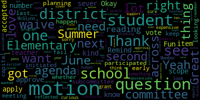
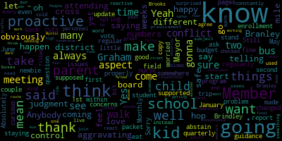
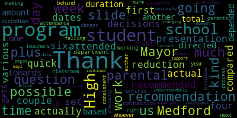

AI-generated transcript of Regular MSC Meeting
English | español | português | 中国人 | kreyol ayisyen | tiếng việt | ខ្មែរ | русский | عربي | 한국인
Back to all transcripts
[Lungo-Koehn]: It's the 13th regular meeting of the Medford School Committee. This is the 13th regular meeting of the Medford School Committee, September 9th, 2024. This meeting is being recorded. The meeting can be viewed live on the Medford Public Schools YouTube channel through Medford Community Media on your local cable channels, Comcast channel 98422 and Verizon channel 434547. Participants can log We'll call in by using the following link. The meeting ID is 924-7699-1263. Member Ruseau, if you could call the roll, please.
[SPEAKER_21]: Member Branley.
[Lungo-Koehn]: Present.
[SPEAKER_21]: Member Graham.
[Lungo-Koehn]: Here.
[SPEAKER_21]: Member in top. Here. Member Olapade. Present. Member Reinfeld.
[Lungo-Koehn]: Here.
[SPEAKER_21]: Member Ruseau present. Mayor Longo-Kerr.
[Lungo-Koehn]: Present, seven present, zero absent. Dr. Cushing, do we have any student reps on the call? We have not selected them yet, but we will have them next week. Thank you. Two weeks, actually. I think we have a meeting in two weeks. Thank you. If we all may rise to salute the flag.
[SPEAKER_23]: I pledge allegiance to the flag of the United States of America and to the republic for which it stands, one nation, under God, indivisible, with liberty and justice for all.
[Lungo-Koehn]: We have number three, good of the order, before we take up the consent agenda. Hearing and seeing no hands, I'll move on to number four, the consent agenda. We have approval of bills and payrolls, approval of capital purchases, approval of meeting minutes, regular meeting minutes, June 10th, 2024, special meeting minutes, June 24th, 2024, Special meeting minutes, July 3rd, 2024. Special meeting minutes, July 24th, 2024. Special meeting minutes, July 31st, 2024. Special meeting minutes, August 21st, 2024. Is there a motion on that?
[Reinfeld]: Motion to sever June 24th.
[Lungo-Koehn]: Motion to sever June 24th. My member Reinfeld, seconded by? There's an error. They don't need a second or a vote. No need for a second?
[Ruseau]: No second or a vote. Also motion to sever the capital purchases.
[Lungo-Koehn]: Motion to sever the capital purchases by Member Ruseau.
[Reinfeld]: I'd like to amend the approval of the teacher budget line item. The vote was 5-0-2, not 5-1-1. There were two abstentions, no no votes.
[Lungo-Koehn]: Thank you. So making that correction on the June 24th, 2024 meeting minutes. So do you wanna vote on them separately since you severed them or did you just wanna amend them? I'll just amend them. Just amend them, okay. So we're amending the June 24th, 2024 minutes. And motion to approve everything, including the amendments from June 24th, 2024, other than the capital purchases. Motion on the floor, by? Motion. By Member Ruseau, seconded by? Second. Member Intapa? All those in favor?
[SPEAKER_01]: Aye.
[Lungo-Koehn]: All those opposed? I love that. Bill's consent agenda is approved. We have reports of subcommittees. First up is our superintendent's updates in- Capital One.
[Ruseau]: Capital Purchases.
[Lungo-Koehn]: Capital Purchases, sorry. That's okay. Number four, Member Ruseau.
[Ruseau]: I just was looking for a report on, I'm assuming this is for the Brooks boiler hot water heater.
[Cushing]: Good evening, Madam Mayor, members of the school committee. As part of my later operations report, I talk about the Brooks domestic hot water heater. A quick view as it relates to capital projects, we're not ready to purchase just yet. However, the two alternatives B2Q provided for us, one is a condensing hot water heater that has significant efficiencies, but still runs off of natural gas. The price point is in the $92,000 range. They suggest with incidentals and other things budgeting up to $150,000. The alternative three, if I remember correctly, is in the neighborhood of $349,000 for full electric. um despite uh the the natural gas unit condensing hot water heater will allow the city to still make tremendous strides towards our sustainability and environmental goals but given the return on investment versus $349,000 and the lifespan of these pieces of equipment, which at most is 15 years. It would not be a recommendation of myself or other members of the city and school staff that have been part of these phone calls and meetings to recommend the full electric, unfortunately. So before we move forward with design heading into purchasing, I wanted to bring it before the committee because of the stated goals of the committee and the district.
[Lungo-Koehn]: Thank you, sir. Thank you, Dr. Cushing. Member Ruseau.
[Ruseau]: If we could just delay the vote on the capital purchases until we get to that item in the agenda, if that's okay?
[Lungo-Koehn]: So motion to table?
[Ruseau]: Motion to table, yes.
[Lungo-Koehn]: By Member Ruseau, seconded by Member Graham. All those in favor? Aye. All those opposed? capital purchases is tabled. Thank you, Dr. Cushing. We have superintendents updates and comments. I'm gonna turn it over to Dr. Maurice Edwards and our superintendent.
[Edouard-Vincent]: Good evening. welcome to our first school committee meeting of the year i hope you all had a restful and enjoyable summer and that you're as excited as i am to dive into a new school year full of possibilities before we get started i'd like to acknowledge the efforts of everyone who worked tirelessly over the summer to prepare for this school year Whether it was undergoing professional development, updating curricula, or getting our facilities ready, your hard work has not gone unnoticed. Throughout the summer and in the early stages of the school year, we were fortunate to receive multiple donations of school supplies from our Medford community. i want to thank mayor longo kern and everyone who donated to the mayor's annual summer school supply drive while also recognizing our medford high girls varsity basketball team for dropping the supplies off at the high school i'd also like to thank the Members Plus Credit Union located on High Street for donating 50 backpacks full of school supplies last week. To everyone who donated to our schools, we sincerely appreciate your warmth and kindness. I also would like to thank the Medford Family Network for donations to the schools as well. Again, thank you for your support of the Medford Public Schools. The 2024-25 school year unofficially began on Monday, August 19th, during new teacher induction week. With over 60 new educators and paraprofessionals across the district at that point in time, the week served as a tremendous opportunity to welcome our new staff to Medford. Among the many activities they participated in was a tour of our beautiful city. Our new educators visited Tufts University, the Medford Public Library, and here, the Chambers of City Hall, where they spoke with the mayor. I want to thank Tufts University Community Relations Director Rocco DiRico, the Medford Public Library, and Mayor Lungo-Koehn for hosting our new educators and informing them about our community. Also, I would like to send a special thank you to Medford High School assistant principal, Mr. David Blouk, and Brooks Elementary School kindergarten teacher, Ms. Maria Michelli, two longtime residents with extensive knowledge of our city for leading the tour. I'd like to welcome our new administrators as well, joining us for this school year. Many of them you've already met at the end of the school year, so I will not reintroduce them again. But I would like to formally welcome Ms. Katie Bradley, who was named as our special education coordinator for the Missatuck and the Roberts Elementary School. I also want to welcome Ms. Suzanne Fee, who is our coordinator of arts, who you'll be hearing from later on while recapping our summer programming. Lastly, but definitely not least, among our other new administrative hires, I'd like to formally welcome, again, Ms. Jennifer Silver, a longtime nurse at Medford Public Schools. who recently became our Director of Health Services. We're so lucky to have all of you here with us in Medford. So on Monday, August 26th, that was the first day of school for all of our teachers and staff members. We all gathered at Medford High School gym before staff dispersed to their respective buildings. It was wonderful to see so many familiar faces and feel the excitement buzzing through the air. On Tuesday, August 27th, that was our first day of school for our students in grades one through 12. and I had the privilege of visiting all of our schools across the first few days of the new year. Our students reconnected with friends, met their new teachers, and began to understand their new surroundings. The passion of our teachers, administration, and staff was evident throughout the district. With our MEEP program beginning on Tuesday, September 3rd, and kindergarten students following that Wednesday joining our hallways, our school community is officially all together again. So now I will transition to news happening across the district. Medford High School made national headlines this summer for their positive work in battling chronic absenteeism. Chronic absenteeism is defined as when students miss 10% of the school year. to battle this issue among many initiatives implemented by high school principal miss cabral and her team students had the opportunity to use the gym during lunch hours for organized sports and other supervised activities as long as they attended all of their classes This use of the gym space quickly gained popularity amongst the students, leading to Medford High School experiencing one of the steepest declines in chronic absenteeism among all Massachusetts high schools. This story was first featured in the Associated Press. and given that they are a wire news service, was featured across the country in various outlets, such as the Boston Globe, the Seattle Times, the US News and World Report, and more. NBC 10 also stopped by a few days later to speak with Ms. Cabral and our students in a video package that featured on the nightly news and in digital outlets. NBC 10 went on to inform us that this story is one of their most viewed videos on both TikTok and YouTube Shorts. So congratulations on going viral, Ms. Cabral. We are so thankful for the collaboration, Ms. Cabral and the staff at Medford High School and our students have shown towards tackling this important issue of chronic absenteeism. The tremendous reach of this story is gratifying for our school leaders and a marvelous example of the impact we have as educators. Last week, Moving to the sports realm, the United Soccer Coaches Team Academic Achievement Award was presented to the Medford High School Mustangs Girls Soccer Team for the fourth consecutive year. recognizing their academic accomplishments over the 23-24 school year. The team's achievement of a 3.25 or higher composite grade point average encompassing all players earned them this unique distinction. Notably, they are one of only six Massachusetts high school girls soccer teams to receive the award this year. To our players and coaches, Coach Rocco Cieri, we are so proud of you for fostering an environment of success both on the field and in the classroom. Thank you for proudly representing Medford. Also, last week was the beginning of our fall sports season for our high school teams, and Mustang Nation has had a terrific start to the fall season. Last Thursday, our boys and girls varsity and junior varsity soccer teams won their opening matches of the year. we have also seen seasonal season openers for our boys and girls, cross country teams, our boys golf team and our own football team. This coming Thursday, you are all invited. Our football team will play their first home game of the year at Hormel Stadium. Show your Medford pride while cheering on our players, cheerleaders, band students, color guard, and all of Mustang Nation. The game kicks off at 6 p.m. on Thursday, September 12th. Throughout this week, Medford will be celebrating National Arts in Education Week. Our robust arts program, encompassing all facets of performing and visual arts, encourages students to express their creativity and let their personality shine through their work. As we have settled into the year, all art and music classes in grades K through 12 are in full swing. The marching band will be making its debut at this week's football game. All fourth grade students will be getting a band and orchestra demonstration this week. and signups for the instrumental programs will be open after that. Additionally, auditions for the Fall Drama Club presentation will happen this week as well. So again, please pay attention. A lot of wonderful things happening in the arts. For our listening community members, this week is the kickoff of all of our school curriculum nights. Curriculum nights serve as a wonderful opportunity for parents and caregivers to meet your child's teacher and school leaders. Parents and caregivers will hear more about what your child will be learning throughout the school year. The Roberts Elementary School and the Andrews Middle School, their curriculum night will take place tomorrow, Tuesday, September 10th. The Missatuck and Brooks Elementary School will host their curriculum nights on Wednesday, September 11th. The McGlynn Middle School will host their curriculum night on Thursday, September 12th. The festivities will carry into next week when the McGlynn Elementary School will host their curriculum night on Tuesday, September 17th. Lastly, but definitely not least, Medford High School will hold their curriculum night on Thursday, September 19th. All are welcome to attend. Please visit your respective child's school website for start times and additional information. I also want to just notify the community that next Wednesday, September 18th, will be our half day. Teachers will be undergoing professional development sessions in the afternoon. These professional development sessions often provide opportunities for teachers to collaborate with peers, share experiences, build a supportive professional community. And this collaboration leads to a more cohesive school culture and collective problem solving. So before previewing the rest of tonight's agenda and in reflection of the events that took place last week in Winder, Georgia, and ahead of the 23rd anniversary of September 11, I just want to take a brief moment to speak and share on these two tragedies that have left an indelible mark on our nation and on so many lives. we will always remember those who were lost, honor the bravery of first responders, and acknowledge the strength and resilience of all who were affected by these senseless attacks. All of our Medford Public Schools staff were reminded again earlier this morning of our school safety protocols through a communication. Staff are encouraged to reach out to building principals and senior administrators with any questions relating to our safety procedures. later this evening there will be a brief mention during the operations presentation later today in our schools we do strive to foster a community of empathy understanding and respect it is important for us to come together to remember and to support one another throughout the year we uphold the values of unity and compassion that were so profoundly demonstrated in the aftermath of these tragedies so today's agenda is packed with important topics that will encompass wide-ranging information about medford public schools We will hear about several grant opportunities that Medford Public Schools has been fortunate enough to receive. And we have school principals here with us this evening. We have Principal Miss Kroll of the Roberts Elementary School and our Principal Miss Cabral here this evening, who will be presenting at different points. We also hear about summer programming achievements presented by Assistant Superintendent, Dr. Galusi, our Director of Pupil Services, Ms. Joan Bowen, our Director of Arts, Ms. Suzanne Fee, our Director of English Learners, Mr. Paul Teixeira, and our Principal, Ms. Cabral from Medford High School. These individuals, along with many others, helped shape a great summer in Medford for our students and families. Immediately following that, there will be a report on enrollment and personnel update from Dr. Gallussi, and the final official presentation will be by Dr. Peter Cushing, giving us an update on operations happening in the Medford Public Schools. I also want to take a moment to congratulate Dr. Cushing and his wife, Megan, who earlier this summer welcomed a beautiful baby girl to their family. So congratulations on your new addition, Dr. Cushing. I also would like to just take a moment to say that there was originally a mistake in the first posted agenda that listed the condolences. And by mistake, we mistakenly listed Ms. Karen McGlynn-Devine. on the condolences section. I do want to share that Ms. Karen McGlynn Devine and myself, we had the opportunity to speak today. She is alive and well, has fully accepted our apology for the error that took place when we were sending condolences to her aunt, Ms. Pauline Leno Davis, Lennox Davis. But we want to just say, thank you, Ms. McGlynn-Devine for your understanding. And we apologize for the mistake that took place with the listing. I wanna just say to all, thank you for being here this evening, for your unwavering commitment to our schools in Medford. And I am looking forward to a great year ahead. Thank you.
[Lungo-Koehn]: Thank you, Dr. Edward-Midson. Number two, we have recommendation to approve $35,000 grant from the Cummings Foundation to the Center for Citizenship and Social Responsibility, which is our CCSR group for the 2024-2025 school year. I'm going to turn it over to you again, Dr. Edward Vincent.
[Edouard-Vincent]: So good evening again. This recommendation to approve in 2021, the Medford Public Schools was awarded $350,000 from the Cummings Foundation. We are truly, truly grateful for the partnership of Mr. Cummings and the Cummings Foundation supporting the Medford Public Schools in a variety of capacities. This $35,000 is one of the installments that we will be receiving for the next 10 years. And so this is just for the school committee to recognize that you did approve the full grant in the amount of $350,000 in 2021. But we want to acknowledge every time we receive this generous donation. from the Cummings Foundation. And so I just want to bring this before the committee again. Thank you.
[Lungo-Koehn]: Thank you, Dr. Edward Vinson. Is there a motion for approval? Mayor? Member Graham?
[Graham]: I just have a quick question or a comment. If possible, when these recommendations come before us, if there is anything... sort of, I guess I'll say unusual about what the grant requirements are that those be listed. And the reason it popped up as I was reading this was I remember hearing during the budget that there are particular stipulations in this grant about how we compensate our staff. So I would call that noteworthy just to sort of continue to remind folks about what our requirements are in order to accept and be in compliance with these grants. like the letter that is attached talks about an impact report. That's important because we want to make sure we're doing those things. But if there are other things that sort of... outlying or restrict or govern in some way or operations, those things need to be called out in the memo as well so that we are just clear on what those things are before we approve. Motion to approve.
[Edouard-Vincent]: Thank you. And I do believe part of the stipulation for the Cummings grant is that we formally state when we receive it. That's how it was explained to me. So I'll make sure to do that. Thank you.
[Lungo-Koehn]: Thank you. Motion for approval by Member Graham, seconded by Member Reinfeld. All those in favor? Aye. All those opposed? Recommendation is approved. Number three, we have a recommendation to approve a $50,000 grant from Ernie Block Jr. Music Drives Us organization to the Roberts Elementary School. Ms. Michelle Crowell, Principal of the Elementary School of the Roberts is here to present. Thank you. Welcome.
[Crowell]: Good evening. Thank you for having me here tonight to share some exciting news from the Roberts School. After a successful concert last February, where approximately 700 parents attended, it was pretty apparent that we were in need of some updated musical equipment to continue to produce musical performances of this magnitude. In collaboration with Dr. Stern, our music teacher, and Ms. Tara Sharest, a Roberts School parent, the Roberts School submitted a grant through Ernie Bach Jr.' 's Music Drives Us Foundation. This is a competitive grant that schools and organizations in New England can apply for to support existing music programs. Over the summer, the Music Drives Us Foundation notified the Roberts that they were going to award us a grant to purchase 40 new violins for our string students, a new grand piano, new student risers, a classroom set of ukuleles, and a new electric keyboard totaling approximately $50,000. We are truly grateful to the Music Drives Us Foundation for this generous grant that will allow us to provide our students with the highest quality music education. Thank you.
[Lungo-Koehn]: Wonderful, Ms. Crowell. Thank you. Please thank the parent who helped apply for this grant. I'm going to turn it over to Member Reinfeld and Member Ruseau.
[Reinfeld]: I have a question. Is there a limitation on the number of schools from a district who can apply for this kind of thing?
[Crowell]: I don't think that there's a limitation. So there's some different criteria. So we applied specifically for equipment, but there are some different categories. And it's...
[Reinfeld]: because I love this and you know I have a kid at the Roberts, so I'm super excited, but I also want to be thinking about our other elementary schools and equity across the district.
[Crowell]: I would encourage folks to apply. He'll be delivering, so Ernie Buck Jr. will be coming to the Roberts to do a personal delivery. I'll let you all know, he wants to, he's inviting everybody and he shows up with his truck, so we don't have the equipment yet, but he will be delivering everything to our school. And it really just gives opportunity for our kids with music. I think the ukulele set is going to be something that, you know, our kids learn recorder, which is really exciting. But at the same time, like ukuleles are just so cool, right? And so now our kids will have an opportunity to learn the ukulele in our music class. So it's exciting.
[Lungo-Koehn]: That's great. Thank you. Member Ruseau, do you still have a question? That was it. Okay. So obviously there must be a motion for approval of $50,000 by Member Intapa. Do I have a second? A second. By Member Branley. All those in favor? Aye. All those opposed? Motion is passed. Thank you. Excellent.
[Crowell]: I'll invite you all when he comes.
[Lungo-Koehn]: Sounds great. Number four, we have a recommendation to approve $200,000 grant from the Bar Foundation to Medford High School. Ms. Marta Cabral, principal of Medford High School is here to give us some information. Welcome.
[Cabral]: Good evening. I'm pleased to share that the Barr Foundation, a private organization focused on providing all students a high quality educational experience has approved a $200,000 grant to Medford Public Schools to actualize the instructional vision at Medford High School over the next 24 months. The Barr Foundation's education program focuses on the transformation of the public high school experience to advance excellence and equity for young people, especially for students of color and other marginalized students across New England. We're excited to partner with the Barr Foundation and appreciate their generosity as well as their support in actualizing the important work.
[SPEAKER_21]: Motion to approve.
[Lungo-Koehn]: Short but sweet. Nice. Thank you, Ms. Cabral. Motion to approve by Member Ruseau. Seconded by Member Reinfeld. All those in favor? Aye. All those opposed? We will accept 200,000. Thank you. Thank you. And thank you to the Bar Foundation. They also provide funding to the city in our Office of Prevention, Outreach, and Municipal Vulnerability Work. So they're wonderful, thank you. We have a recommendation to approve a field trip for the culinary arts program to visit Johnson and Wales University in Rhode Island. Here to present is Dr. Peter Cushing, Assistant Superintendent.
[Cushing]: Good evening, Madam Mayor, members of the school committee. Thank you. As you know, all out-of-state and overnight field trips need to come before this body. Johnson & Wales is a world-renowned culinary school that is offering 23 students, juniors and seniors, the opportunity to come to experience a day there, view the program, their facilities, dorms, and enjoy meals created by their culinary students. Recommendation to approve this out-of-state field trip for September 17th.
[Reinfeld]: Motion to approve.
[Branley]: Mayor? Member Branley? My child is a student in this program, so I don't know if I should abstain from the vote. I'm all for it, but I don't know if it's a conflict, so. Not a conflict. Anybody? Is she attending? She's attending. Still not a conflict. Yeah, it's fine. They're telling me it's good. Yes, I'll second then.
[Lungo-Koehn]: It's going to pass.
[Branley]: I mean, I want to go. I want to come eat.
[Lungo-Koehn]: Okay, perfect. Motion for approval. Did I hear? Somebody did. By Member Reinfeld, seconded by Member Branley. Before we call the roll, Member Ruseau.
[Ruseau]: I'm sure you know what I'm going to ask, that we get the field trip form. and all that Corey details at a subsequent meeting. This is happening before our next meeting.
[Cushing]: I can submit it to the committee on blind carbon copy. So there's no chance of debate or deliberation.
[Ruseau]: Just I'm not suggesting we don't let them go, but we do a policy requiring that form to be approved before the field trip. So I'll pretend that about the policy for a minute, I guess, but just, you know, let's not put these forward without including all the proper paperwork. So we don't have that problem.
[Branley]: Can I, can I ask a question on that? Just being a newbie, if the field trip is within the first couple of weeks.
[Ruseau]: we haven't had time to approve it because this is our first meeting and the field trip is next week how does that work policy-wise just curious i just honestly don't know remember um so i mean if the field trip was planned before the end of the school year for the beginning of the school year then it could be submitted then i would say that we should have a special meeting with a one-item agenda we can be in and out in 10 minutes but we we do have that policy because Well, I don't want to rehash history, but that's why we do require that we approve the form with, you know, the nursing looked at it and the nursing has signed off on it and all the other stuff. And I'm sure that will all happen, but we are also supposed to give the sign off on that. So that's how I would. Now, of course, you know, this could have come up literally a week ago. so i think you know we don't exercise special meetings that often we just save them for like emergencies but i think we should use them more often um for things such as this so we can comply with our own policies there's a motion for approval by member reinfeld seconded by member brandley all those in favor all right all those opposed motion passes enjoy um the field trip to our 23 students
[Lungo-Koehn]: Number six, report on summer programming. Dr. Suzanne B. Gallussi, Assistant Superintendent, Ms. Joan Bowen, Director of Pupil Services, Ms. Suzanne Fee, Director of Fine Arts, Mr. Paul Tuxera, Director of EL, and Ms. Marta Cabral, Principal of Mecklenburg High School. I'll turn it over to you all.
[Galusi]: Good evening. Welcome back. I just have one update before I kick it off. Thank you for introducing everyone. Director Fee is not here this evening. So I will be covering the music and the art programming as well as the early literacy. And I do think if there are any questions, Dr. Chiesa was also instrumental in the early literacy or the literacy program over the summer. So she's also available. But thank you very much. And I'm going to have Joan Bowen start first.
[Bowen]: Good evening and welcome back. So I'm here to report on the extended school year services that were held this summer for our students with disabilities. So each summer, the special education department provides a wide range of services during the extended school year. These are for students who are at risk for substantial regression or experiencing difficulty with recruitment of previous learned skills. So this year, our teams met and 251 students were recommended for a wide variety of specialized services and approximately 201 students attended this year. So our special education programs were housed in three different locations. We had programs, our access program for middle school and high school that were located at Medford High School. At the Missatuck Elementary, we had a wide range of tutoring and related services. And at the Roberts Elementary School, we had our meet programming as well as our connections program. And on the right hand side just tells you the breakdown of the different types of programs that we held, as well as how many weeks they run for. So the programs for our students who require our most vulnerable students is a six week program, five days per week from July 1st to August 9th. And then we also have four week programs. One is a five week program, and that also includes some of our substantially separate programs It could be language-based program, learning group program, as well as access program. And then we also have a three week, I mean, a three day per week, four week program. And that's for our MEAP students, our language-based students and our learning group students. This is three days per week. They come in, they receive their services. They don't require the five day program. And then lastly is our tutoring and related services program. That's also a four week, three, three day per week program that ran from July 9th to August 1st. The next slide just gives you a breakdown of how many students were enrolled in our specific programs this year. And we go from our connections pre-K to five. We had... 33 students. We had approximately 89 students that attended for tutoring and there's a wide range in between for all the different services. The related services included speech, occupational therapy, physical therapy, vision, hearing, and those service as well as counseling and social skills groups. And lastly, well, not lastly, but this is the breakdown of the staffing that is required to run our extended school year program. We had one program supervisor this year. We had approximately 20 teachers that worked. Two were reading specialists. We had 34 paraprofessionals who supported the programs, and one was also a paraprofessional supporting a student who attended summer fun. We had speech therapists, occupational therapists. We also had an occupational therapy assistant, school adjustment Councilors, nursing, BCBAs, and our vision specialists providing services. The success of this program could not run as well as it does every year if it wasn't for the devoted special education staff who commit to working each and every summer. We can't run this program without them. I also want to express, if you can go to the next slide, please. My sincere appreciation and gratitude to all of the staff who worked this summer. A special thanks to Kim Clinton, who's our special education coordinator. She was our program supervisor and really led the way in organizing all of the schedules, the hiring, the transportation for this program, as well as all of the special education coordinators and ETLs. who worked tirelessly from February till June, and the planning and organizing of the extended school year program, scheduling, and collaborating with families and staff throughout the year. So we will continue this program next year. If you have any questions, I can take them now, or if you want to wait till the end of the presentation.
[Lungo-Koehn]: Member Olapade?
[Olapade]: Thank you, Mayor, and thank you so much for this presentation. I have a couple of quick questions. So on the first slide about the 251 students that were recommended compared to the 201 that actually attended, was the reduction from the recommendation to the actual because of... parental decisions or was it a?
[Bowen]: It was based on parental decisions. So we planned for the 251. Their parents have decided not to have their students participate. They go away for the summer months. Some parents have elected to have their students attend summer fun and not access our extended school year. So there was a wide variety, but we send out a survey in February and we send it out several times to see who will be accessing. the extended school year service. So we planned for that, but last minute changes come about. And we also offer transportation so students can access those services.
[Olapade]: Thank you. And then for the dates and times slide with the six week, four week and various programs, is there a set duration for each program or is it the same for all of them? And then it just depended on the total amount.
[Bowen]: So we look at the recommendations that the team has made. So for our connections program, one of our access programs, those are typically our six-week programs, and then everything else falls into the other four-week. Our four-week, three-day program is typically MEAP, a language-based program, and our learning group program. And then tutoring is always the three days.
[Olapade]: Thank you. And then... for each student that gets directed towards one program or another, is that based off both the recommendation of the department plus the conjunction with their parental or their custodian, like whoever's working with them day to day in their classroom and their parents?
[Bowen]: Correct. So these decisions are made within the team meeting. So it could be an annual review or a three-year re-evaluation. And this is one of the components that has to be considered on a yearly basis. So they walk through... they look at has the student experienced regression or the inability to recoup skills after say a long vacation or after the winter break, the spring break. So they take some data and that's when the recommendation is made. And then based on what the team feels the student requires, then they would offer the six week, the four week, that sort of thing.
[Olapade]: Thank you so much.
[Bowen]: You're welcome.
[Lungo-Koehn]: Yes, member Ruseau.
[Ruseau]: Thank you. Were you fully staffed?
[Bowen]: Yes, we were. Wonderful news. I think maybe more so than we needed, but I'd rather be overstaffed than under.
[Ruseau]: That's a problem not many people probably have. Right. And when we survey whether people are going to participate, do we ask them why if they say no?
[Bowen]: You know what? I would have to check the survey to see, but we do reach out to them several times just to confirm, but I can see if there's a reason why and get back to you on that one.
[Ruseau]: It just sounds like something that might be interesting just to make sure there's not something that you could do differently that would increase.
[Bowen]: And we also too, we try to ask further, is it transportation they required access? So that's also included in that survey, but I can reach out to Kim Clinton to find out if there are any specific reasons and maybe we tweak the survey going forward to get a better understanding of why. Great, thank you. Thank you.
[Teixeira]: Hi, good evening, everyone. Dr. Cushy. The EL Summer Enrichment Program, we have various programs that happen starting in the end of June. It starts with a one-week STEM camp at Hanscom Air Force Base through STAR Labs, which is a week-long STEM camp for students in fifth and sixth grade. They do robotics, engineering, computer design. They build rockets. They get to launch them. It's kind of fun. and after that ends then we roll into our summer enrichment program which it's basically uh k through eight uh k through five is at the missatuck our numbers actually doubled this year we typically have about 45 students in the program during the summer and this year we had almost 100. Then at the middle school, which we host up at the high school, we run a middle school summer enrichment program. And then we do an add-on program for credit recovery for high school students to get what they need. So if they failed a class, it's a combination of enrichment and credit recovery. And then we also offer tutoring at the Medford Public Library, and that's for our secondary students. Teachers will do office hours, just one hour, and it fluctuates based on availability. It's mornings and evenings. And students who need help with getting their summer reading done, picking out books, any other math or history packets at the secondary level, there's a teacher there to kind of guide them through that through the summer. And those, Dr. Cushing, if you want, I just have pictures of what we did. Also at the elementary program, we contracted with High Touch High Tech, which is a science organization that's in Massachusetts and Maine, I think. And they come and we get to pick what they're going to do. I think last year was bridges, beams, and columns. This year they did electricity. They learned how to build circuits. And so the scientists come and they rotate through the grades throughout the day. Dr. Cushing? And then with the elementary program, because this is enrichment and it's paid for out of Title III, we try to plan a field trip every week. Because of our increased numbers, we actually had to separate out. So all of the students got to go to the Franklin Park Zoo. But the Children's Museum and the Aquarium, we divided it K-2 and 3-5 to offset the numbers because Title III will pay the admission, the transportation costs, everything for the students for the enrichment program. Dr. Cushing. These are just various photos of the field trips that the students went on. And the summer curriculum is tied into what the students are learning. So, you know, there's an animal component, there's sea life, there's, you know, general academics that also happen. And then these are photos from Starbase. This was actually building bridges. And this was CAD design for programming the robots too. And then again, as Ms. Bowen said, this wouldn't have happened without the support of the teachers. This is the list of all of the teachers. I was also fully staffed. I was very lucky because of the increased numbers that I managed to get some additional staff to support the program. And then also a special thanks to Anthony Petralis because what we do is our program ends at noon but what we've done with him is arranged that we have 30 slots for the after-school program that they can go into summer fun i provide the teachers as an add-on so students can stay and get the full day in if they choose
[Reinfeld]: So there were 90 enrolled, 30 got to do Summer Fun. Were there people who wanted to do Summer Fun that didn't get to?
[Teixeira]: So we took a list. So we send out a separate permission slip after students show up and register, and we keep a separate list. So as students, not every student that signed up could go on to Summer Fun because we only have the 30 slots. We can't overwhelm the program. but anyone that signed up for it. So if a student was absent, we could rotate through, we would call and say, oh, you know, child can stay today. So almost everybody got, you know, that wanted to got to experience it at some point.
[Lungo-Koehn]: Member Ruseau.
[Ruseau]: The number's growing so much. Can you talk about why?
[Teixeira]: I wish I had an answer. It was a surprise when the registration started coming in and we were counting up the numbers and making the class lists. I just, I don't have a reason.
[SPEAKER_01]: We'll take it.
[Teixeira]: Like I said, it gave me it because of the registration and we'll accept registrations the day of, because again, it's enrichment. Again, it allowed us to give us a little lag time because we had that week off to recruit two more teachers for the program.
[Ruseau]: Great. And Title III pays for all of this, you said?
[Teixeira]: Yes, it all comes out of the Title III grant.
[Ruseau]: Fabulous. Thank you.
[Intoppa]: Member Intapa? Thank you. This probably isn't an important question. This is just me being curious. What CAD program are they teaching the kids? Are they teaching them SolidWorks? I have no idea what the name of the program is. Because it looks like the program that I was taught in college. So the fact that we're teaching these students such a, I mean, like it might not be, but it looks just like that program. I use it at a college level and at an industry level. So I just want to...
[Teixeira]: So like I said, they were building bridges, so I don't know if that's what that program would be for, but then the other program in the other picture was coding so they could actually program their robots to follow a track, and then the robots fight the little robot wars. That's amazing.
[Intoppa]: I wish I had that when I was, like, that's crazy.
[Teixeira]: It was a little more than just one week.
[Intoppa]: Yeah. That's the only time you can get, but it's... I wanted to take that, I'm sorry, my mic is echoing. everywhere um i'll speak softer um i just want to echo how great that is um because again like this is these are this is the time to learn these programs and you know it'll excel the future um through that so that i just wanted to send my regards is awesome thank you great thank you very much
[Cabral]: So at the high school, we offered fifth quarter, formerly known as our credit recovery program. If you can, oh, I'm sorry. It was led by Riley Jones, who was the director of the summer school program, who's also a teacher at the high school. We offered it to both middle and high school students over the summer. To start, we set learning expectations and objectives for both students and for teachers. For teachers, teachers provided instruction through the standards for the content area along with providing competency-based exams and assessments because it was over a short amount of time for the year that the students were engaged in the work throughout the year. We offered 30 days of instruction, so the program ran from the end of the school year to the first week of August. We offered middle school courses and high school courses. For middle school, ELA and math were identified as content areas for summer school, along with high school courses that spanned between English, math, science, and history. For the middle school numbers, we had 23 students enrolled in math, 17 students passed, 74% pass rate. For ELA, we had 19 students enrolled, 16 student passed and 84% with an 84% pass rate. For the high school, we had for our math programs, integrated math, geometry and algebra two, we had between a 94% pass rate to 100% pass rate. For the English and humanities, we had an English course and a world slash US history course that we offered. 26 were in the English, 85% pass rate. History, 19 students were enrolled and 79% pass rate. For the sciences, we had 18 students. That was our bigger number of science students. In biology, which is grade nine, 18 students enrolled, 16 students passed with an 89% pass rate. For chemistry, we had 100% pass rate for the five students that were enrolled in that program. I want to give a special thanks to all of the teachers that were there every single day over five weeks span along with Riley Jones who oversaw the program and then the administration that was there for support when needed.
[Reinfeld]: So the students who didn't pass, what support is available? What happens next for them?
[Cabral]: Yeah, so for the students that did not pass, it was primarily based on attendance. So they missed so many days and they weren't able to recover the credit. They are working with their school Councilors now as to how we can recover those credits in order for them to graduate with their cohort on time.
[Lungo-Koehn]: Great, thank you very much. Oh, Member Lopate.
[Olapade]: Thank you. A question about the students that are entered into this program. Is there a process in which we work with them going to the next school year about how to either be more consistent with attendance or about how to kind of work with your teachers after school about making sure that they're not in danger of falling behind their credits just so that understandably that these students were struggling to begin with. Are there ways for us to kind of continue to support them going forward that they may not have had previously?
[Cabral]: Yes, so we are taking a deep dive in the data from our Saturday Academy that we had running throughout the school year to the students that are enrolled in summer school and how can we best support them throughout the whole entire school year, starting from day one. We are working with the school counseling department who are now going to be pushing into classes and providing workshops, especially for grade nine and 10. We're finding they need a lot more executive functioning, planning and supports. And then as well as tracking these students. So for like the students that were already, for example, ninth and 10th grade primarily that have engaged in our fifth quarter this year, how do we make sure that they're not on track for that starting this week so that they're not constantly trying to catch up and they're at a deficit?
[Olapade]: Thank you.
[Galusi]: Thank you. So in June, I'm sorry, I'm just going to advance my... In June, I came with Dr. Chiesa and we presented that we got a vacation grant through the Department of Education to focus on literacy acceleration for our students. This spanned Medford Public School students from... grades one to grade nine. The focus of this was on literacy and grade level skills and easing the transition to the next grade level. You can go to the next slide, please. This was already presented in June, but as a reminder, students in the Acceleration Academy, they were selected by invitation based on district-wide data. So at the elementary level for students in grades one through three, that was primarily DIBELS data with some of the MAP data. For students in grades four and five, That was a combination of DIBELS data, MAP data, and MCAS data. And for rising sixth graders and ninth graders, again, some of those students had DIBELS data as well as MAP growth and MCAS data. This acceleration program was a full day program that took place at the McGlynn School for one week, the week of July 29th. free breakfast and lunch was provided. It was structured somewhat typical to a regular school day so that students were able to engage in literacy, core literacy instruction, as well as enrichment activities. We had a physical education teacher, on staff and an art teacher on staff. Each classroom, so the way the grant was set up was that it really was structured for small group targeted tiered instruction. And so we made sure that we structured that format so that within each grade level span, we had multiple teachers in a classroom. So each grade more, more in the younger grades and a little bit less as they progressed. But we had about two to three teachers in each classroom so that we were able to target very specifically that small group instruction. And so that in those grades, there was a content teacher or a classroom teacher and a reading specialist. We had, for the span, about 55 students in grades one through three, 16 students in grades four through five, and 15 students in rising grades six through nine. At the end of the grant program, Dr. Chiesa sent two surveys, one to the teachers, the participating teachers in the program, and another one to caregivers to elicit some feedback on how the program went. Teachers, we got a lot of positive feedback from teachers in terms of the format that we had for that small group instruction. that they were able to work collaboratively and really target the instruction and each kind of own some of that reading instruction. So there were some future recommendations to have the program start a little closer to when school gets out. Some of the feedback was that it needs to be a longer program. that one week was not enough, which we have been in active conversations about how we can increase this opportunity beyond DESE funding through a grant. And a lot of the positives from teachers, they really enjoyed that daily schedule. They liked having co-teachers to facilitate with, and they loved the small group instruction. The feedback from caregivers, 100% of caregivers said that they would love to have their students participate in this program again. They thought it was very beneficial. They appreciated the ongoing communication. They wished that it was a little bit longer or that there was some extended opportunities for extended care. And the location, we were very mindful to have this housed at the McGlynn School for several reasons. Transportation was not part of this opportunity that we gave to our families. And so the students that were invited, a lot of them primarily lived in that area. And so we wanted to make sure that we were bringing the program to the students that needed it the most. In addition, that because our programs span from grades one to nine or high school, the McGlynn lent itself nicely to the space and the air conditioning. The next slide just shows a few pictures, not many, but just you can see the small group instruction, elementary on the outer and the sixth and ninth grade in the middle. And again, This would not be possible without the teachers and the people heavily involved in this program. So Dr. Chiesa, the humanities director, was this program's facilitator. She did a phenomenal job. She worked very closely with our literacy coach, Kristen Howell, and then all of the teachers ranging from grade one to grade nine with our two specialists, as well as nursing coverage. if you have any questions about this opportunity before I move on to... Mayor.
[Lungo-Koehn]: Member Ruseau, then Member Reinfeld.
[Ruseau]: Thank you. I noticed the comment in the teacher feedback that four days was fun, but the two weeks we did before was great. What is this two weeks we did before?
[Galusi]: We've offered a couple opportunities for extended time in the summer. And we've had a couple of different formats that we've used. One year, last year or the year before, we've done two-week half-day program. And so there's pros and cons to each format that you provide. But for working parents, half-day is also quite difficult to drop students off and pick them up when we don't have transportation. So we could have done the half day program. That was not a requirement per DESE, but we felt very strongly about offering a full day program for working parents and also offering students the opportunity to have two meals and some enrichment with the specialists. So I think that outweighs a little bit of, I would like to see it be longer than one week. But I think that the full-day programming is important for a lot of our families.
[Ruseau]: Great. And so Desi's paying for the meals and the time in the school and all that stuff, right? And they're not covering transportation. So I think that, you know... that doesn't mean that we couldn't, I mean, you know, we don't have lots of money laying around, but that doesn't mean we couldn't do it. And so when the invitations go out, I'm assuming there's lots of people who do not accept the invitation. Are we asking them why? And is that useful information for planning in the future?
[Galusi]: We did do that. And so and we had a lot of a lot of the names that were listed on on there. did a lot of correspondence and outreach to families. And in our survey, we had that question as well. So I think that the double-edged sword here is that we are very appreciative to the Department of Education for their grant, but the timing of it was late. And so we did hear from some families that they had vacations or they were already enrolled in other camps. We did have a few situations in where a student may have attended, may have missed half of the day because they had something else and we just were very flexible because the timing of the invitation was a little later in the year. And if we were planning, would have been more beneficial to have that at an earlier date.
[Ruseau]: So you're saying Gessie didn't even come out with the grant early enough?
[Galusi]: It was a later grant.
[Ruseau]: Okay.
[Bowen]: I know.
[Galusi]: It was a later grant. And then you apply, but you have to wait for the response to see if you've been awarded the grant. Got it. Thank you. And then it's...
[Ruseau]: Thank you.
[Galusi]: It's a lot of work.
[Lungo-Koehn]: Thank you. Member Reinfeld? Yes.
[Reinfeld]: Remind me from June, this was to cover the program for one year. Remind me of the scope.
[Galusi]: Yes, for the grant? Yes. It was literally titled a vacation grant. So it was the intention of the grant was for vacation weeks. or summer, but for one year or one year program. Okay, that's all right.
[Reinfeld]: So remember Ruseau touched on this. What was the percentage of students who accepted? We talked a lot in June about strategies for outreach.
[Galusi]: We did, we did. So we actually, I can get you the exact number in terms of like a percentile. For the students that we invited, we were quite successful in that, in the students participating. we only, because we did have a tiered approach in terms of the students that we were inviting. So we only had to go to that next tier just a few times. I think for me, if I'm looking back at it, the pieces where there was more of that work to do was as we progress in the grades. All right. So we had a lot, you know, I don't think we had to really go much further for students in the lower grades, grades one through three, but for... students in the rising grades four to rising grade nine, that took a little bit more correspondence.
[Reinfeld]: Okay, do we have an opportunity to compare the students who participated with the students who didn't, whether that's through early DIBELS, early MAP, or even qualitative?
[Galusi]: We do. And actually, so this week started both our DIBELS assessments and our math assessments. So we will have a lot of that preliminary data. I think maybe the other piece to an opportunity like this, where it was just one week, even per DIBELS, if we're using that as our benchmark for progress monitoring, they suggest, especially for struggling readers, that we're not assessing until after 10 days of instruction. So we would have to be, a lot of what we would have to be using is this current benchmark at the beginning of the year.
[Reinfeld]: Because it would just be interesting to see if there was any kind of significant shift in scores comparing, looking across the cohort that was invited, those who participated and those who didn't, assuming they were on similar tiers.
[Galusi]: Yes.
[Reinfeld]: Yeah. And then my last question is, it seems like there was a lot of great teacher feedback about the format and how this works. How can we use the lessons that were learned in this summer experience to apply them or scale them up as we're looking at more intensive literacy training with Hill and others?
[Galusi]: I'm glad you asked that question. I'm going to answer it twofold. First, I would like to say that even some of the teacher feedback from our secondary staff that also worked the fifth quarter, some of that was also in conversations that I've had with Riley Jones and with... Principal Cabral. There was a lot of interest to use that model and bring it over to the fifth quarter, especially for middle school students. And that's something that we're working on in terms of like the difference that we kind of saw in some of the data between middle school students that participated in fifth quarter and high school students that participated in fifth quarter. But also too, where this is our new, this is our second year in the literacy program And so literacy programs are so massive that we spent every last minute of our PD time last year on literacy and this program, and we still didn't cover it all. And so a lot of the focus this year is definitely with Hill and with our school leaders is definitely on that small group instruction. So much so that... over the summer, we used teachers from the district literacy leadership team, as well as school leaders. We met in June to really look at our elementary schedule and the teachers worked with their principals over the summer. And we were able to not only align the teachers, the elementary schedules across the district, but our real primary focus was on that literacy block and ensuring that our students are present for tier one instruction and not forced to have to be removed from the classroom for their services. So we were able to really look at our literacy blocks, K to five, and ensure separate times so that students have that tier one instruction, they're part of that small group instruction, and that services are provided at different opportunities so students aren't sacrificing any of that. So that's a very big focus of the literacy instruction this year is that small group instruction. And so when Hill comes around this year, our focus with Hill this year is on, they're gonna be coming into the schools once a month, each building, and they're going to be working on that piece of the implementation of the program. And part of that is going to be focused on the ECRI, the small group instruction, and as well as the tier one whole group time. Does it affect the tier two model as well? The coaching or the schedule? I guess both. So what we were finding and the reason that really precipitated having this summer work is that we have a lot of students, and especially in our Title I buildings of the McGlynn and the Missatuck, there's a lot of students that are duly identified, maybe triply identified, and they need to have multiple services. It could be special education, EL, related services. And too often students were missing that tier one time with their peers. And so we wanted to make that sacred so that students are learning alongside with their peers. They have time with their teacher in small group instruction, as well as having to leave the room for small group instruction. And so we were able to the elementary principals with myself and Dr. Chiesa and the literacy coaches and the teachers on the DLLT, the district leadership team that worked on this all summer, we were able to create more aligned schedules to meet those needs. Thank you. Yeah.
[Graham]: Member Graham? How much was the grant from DESE?
[Galusi]: Roughly. I don't want to misquote. Is Dr. Keyes on the call? I am. OK, I'm going to toss this to you, Dr. Keyes.
[Keyes]: OK, it was approximately $40,000. It just varied based on how many student participants. It was around that amount. We can get you the final amount, but that was the general time frame. I mean, general amount.
[Graham]: OK, thank you. Thank you for that. And we've done this before. And how did we pay for it in the past?
[Galusi]: So that we've had, before we did get a DESE grant, but we've also used ESSER. Okay.
[Graham]: And is it a grant that comes around every year or not necessarily? We have our fingers crossed.
[Galusi]: Okay. Got it. But I would like to be, I would like to, in conversations with Dr. Chiesa and the literacy coaches, I think we would also like to see if there's other ways to fund the expansion. Because even if this comes up again, if we were to offer it with the same format and at the same level of staffing, we would need to supplement that to expand it beyond that one week.
[Graham]: Okay. It's just helpful to know as we ultimately think about the budget and what needs to go in the budget, particularly because planning for this, if we're doing it in advance, is going to pre-date, you know, precede any sort of budget hearings and approvals and all of that. So when you're ready to present a proposal, please do so that we can figure out how to handle that proactively.
[Galusi]: Thank you.
[Graham]: Thanks.
[Galusi]: Okay. So Director Fee, moving on to the last part of this presentation, and I am saddened she couldn't be here. She's very dedicated and has done such a fabulous job. She did not have a summer. because Director Fee has spent the summer securing our brand new band director, who's fabulous, Michael Dampier, and making sure that these programs went off without a hitch. So started during COVID was the Jumpstart Music Program to try to re-energize. That has now become an annual staple. And so the Jumpstart Music Program was very successful. It was a two-week program. for rising students in grades four through eight as a way to either continue their music instruction or if they were interested in chatting with friends, get them involved. There were over 80 students that participated in the Jumpstart music program. Our brand new band director and music teacher, Michael Dampier was there as well as Emma Baptist, Sophia Chang. And we even had high school students students that were volunteering and helping with the younger students i think it's very important to note that there were very various string and percussion instruments that were given to students free of charge so that they could participate in this program although some families did opt to purchase the programs it was up to the family. For the first time this year as part of Jumpstart Music, we were able to include a color guard section. So there were students in rising, I believe they were rising fifth and sixth graders. And we had, excuse me. Oh, there were. Okay. Thank you for that. But it was wonderful. And at the end of the program, they did, on the final day, they did do a performance so that the orchestra and the band and the color guard gave a wonderful performance to caregivers and other people that were working up at the high school that day. It was a wonderful addition. And it's important to note that a lot of... The coordination was also with the Banned Parent Organization. They've worked tirelessly this summer and very closely with Director Fee and Medford Public Schools. And so we're very appreciative of them. And they were able to also secure a Tufts grant to help with that. And then for the first time, Director Fee also had a summer art program. And so this was free of charge for this first annual year. And it was funded by the Medford Arts Council, the Cummings Foundation, and the City of Medford Community Fund. It was a pilot program, but it was very, very successful. High school students, there were about 12 students that participated at the high school level, and they did a studio week on self-directed projects, and everything was connected to social issues that were important to the students. They created ceramic pieces, cardboard sculptures, paintings, drawings, and more. For students in grades four through eight, there were 30 students that participated. They learned and practiced different skills and techniques and applied them to personal projects that reflected a social issue of their choice. And then for students in grades one through three, approximately 25 students participated there. And they spent the week using just exploring different art materials and learning around the themes of kindness. You will see on this last slide, there's just a few pictures that Director Fee included from the workshop. And again, as with all programming this summer, would not be possible without the dedication and commitment of teachers and community. We actually had community members helping as well. And thank you, if you have any questions, I can attempt.
[Lungo-Koehn]: No, thank you for doing a great job with Ms. Fee's presentation. And thank you to Ms. Fee for all the hard work. Member Ruseau?
[Ruseau]: I just want to thank all of the staff and teachers that have spent their whole summer doing all this stuff. A lot of this stuff happened in places that weren't the coolest facilities either. So it's one thing to spend your summer working with kids. it's another to do it when it's too damn hot in the buildings. So thank you to all of the, too many people to list, but thank you to all of this wonderful staff and the administration for making it happen too.
[Galusi]: Thank you for that. And I do think it's important with all that programming, if you added up all of the staff and the educators that participated to make this possible for students, it's a lot. And so we're greatly appreciative of that.
[Lungo-Koehn]: Great, yes, thank you. Thank you. You don't have to go far. I think next step you're getting to report on personnel and enrollment. Thank you, Dr. Guzzi.
[Galusi]: Thank you. All right, thank you. Dr. Cushing is just going to present. I know you had in your packets just a basic overview of the enrollment so far for Metro Public Schools. I know you've probably heard this before, but I just have to reiterate how fluid of a situation enrollment and personnel is at this time of year. Our reporting to DESE is always the first, October 1st. And so there's a lot that's happening between now and October 1st. So much so that even the, Dr. Cushing, you may go to the next slide. I believe in your packets on Friday, you received this as an overall enrollment view. And so one of the things that I just want to explain is it's a slightly different format than what you're used to seeing. Our data analyst Kim Miles works tirelessly always, but especially this time of year, constantly updating this for us. And so one of the things you'll see in the far right is something that's called TBD. and it doesn't reflect a specific school. And so what happens at this time of year is that there's a lot of students whose registrations are not complete, and that's for various reasons. And so they may not have been assigned to a school yet, which is why things are constantly changing. That could be for, it could be medically pending, and it's with Nurse Director Jen Silva. It could be EL, and... there may be some testing with Director Paul Texterra's department, or it just may be that they have not followed back up and have chosen not to come to Medford Public Schools, or there may be another registration hang-up in which the registration office is following up with phone calls to try and assist and see what's going on. So over the weekend, if you just advance, please, Dr. Cushing, to the next slide. Kim Miles had sent this because, again, over the weekend, she was working on cleaning up some of the information. And so this was of yesterday. And this is the most current information that we have. You'll see a shift in the total enrollment because she was cleaning out and making sure that it was accurate in terms of students that have moved on or decided. Oh, I'm terribly sorry. um and so this is a more current view of the enrollment right now for the district i'm not quite yeah do you have any questions before i move to personnel yes member rousseau
[Ruseau]: Could you just send line CC to the school committee when the October 1 report goes to DESE? I mean, it's not gonna look terribly different, but it's good to have, you know, I keep these reports, but I also know that there are so many of these reports that they're not the important reports, so.
[Galusi]: It's preliminary right now, correct. Thank you. Yes.
[Olapade]: Mayor.
[Lungo-Koehn]: Member Olapade.
[Olapade]: Thank you. For the high school enrollment data, is it possible for us, it doesn't have to be, obviously, right this moment, but could we have the Medford High block separate to the Medford High plus the vocational program, just so that we understand how those numbers are changing for the current time? Is that possible?
[Galusi]: That is possible, yes. Thank you.
[Branley]: Mayor? Yes, Member Brindley. Sorry. Can we get a regular update on enrollment? Monthly, quarterly? somewhere just to see how our numbers are staying. Yes. You mean this report? Yeah. Sure. Just a little bit regularly. Just so, you know, even if it was like January 1st or come the spring, just to see where we stand. I'm just, I don't know if there's a time for that, but just curious with, you know, cuts that we made and budget issues, you know, are we being supported properly? You know, nurse guidance, all the things that we worried about back in May and June, some of those things haven't changed. So, concerns me with some of the numbers so i just want to make sure that we're where we're supposed to be thank you no problem member graham
[Graham]: I think the other thing that's important to call out here is the huge disparity in enrollment at our elementary schools. In my mind, it was always like about 100 kids different. And now it's like pushing 200 students different between the Roberts and the Missatuck. Almost 150 between Brooks and Missatuck. And I just want to point that out. to do a couple of things, but one is to put on our radar collectively that like we can't, the gap can't keep widening. Like we have to do something different than we're doing today. And I've talked to people about this a lot. There's not an easy, obvious answer short of like picking a bunch of kids up who live at the McGlynn basically and sending them to the Missatuck or picking a bunch of kids up that live next door to the Brooks and sending them to Missatuck. because of the sort of placement of the Missatuck building in the city, there's sort of less that you can draw from to add to those numbers. And I know it's a huge challenge, but I don't think we can continue to like operate in this fashion. So we have to do something.
[Galusi]: I can respond after you comment. that i would 100 agree um i've had several conversations with principal kroll i don't know if she wants to come up here um but one of the conversations we've had because again the roberts is the only kindergarten is the only school where we had to add yet another fifth section for kindergarten and their numbers are at a hundred um within her schedule so like the specialist schedules students go for their specials there is no more space in her schedule let's say if we had an influx and we had to add another section somewhere in her school there's no more room within the existing schedule so it's a it's a it is a big issue that we definitely have to address um quite quickly
[Lungo-Koehn]: Member Ruseau.
[Ruseau]: So I'm putting it on my list for the budget season because options are the ever nightmarish redistricting, which is not a permanent solution. It's sort of like in my mind, it's like a 10 year solution because people who think that they need to go to a specific school will simply buy a house in that district. It will be a painful experience for people who bought a house near a specific school knowing that that's where their kid was gonna go. And then they go to register and they find out that's not where their kid's gonna go. So, I mean, every district that has ever redistricted, it's not a good experience for the process, but it's necessary. In my time on the school committee, we have moved programs all over the city because for one reason only, the Roberts was too full or the Brooks was too full. We were never doing it because it was right for kids. It was always, we were just too full. And so, you know, some kids ended up on buses. The newcomers program has been all over the place. making decisions that are right for the kids should be how we're approaching these things. But that does also mean we're going to have to all experience some pain in redistricting if that's what we decide to do. So I'm adding it to my list, my short list of things for us to consider budgeting for in the upcoming year, because it isn't like we just get a map out and just start drawing. You hire a company, a consultant who is specialized. There are consultants that specialize in exactly this thing. and they figure out things like what happens to busing and like you draw the line here and all there's these three new babies that were born this week on that street. Like they do all that hard work. And I think we're long past the need to do that because we have to do what's right for kids. And if the Roberts is literally, I mean, the scenario of like a bunch of new people just move in, to that district that we're in bad, bad situation in that case. Because if we decide those new kids have to go to another school, well, they might live right beside the Roberts. And meanwhile, people who are really far from the Roberts, right at the edge, they're getting bused to the Roberts. It's not tenable to just avoid this very challenging and politically very unfun experience, because as you said, we're maxed out. And there are other things. I mean, not that I don't think the principals all do great jobs, but we have principals making about the same amount of money. One has 177 more students to manage. and I don't think they should get paid differently. I think we should resolve that problem. So, well, I guess we'll be talking about that more soon because we can't keep going. Thank you.
[Porcaro]: Thank you.
[Galusi]: All right, so lastly, I'm just going to give a very broad overview of personnel. To date, we've hired, again, this is also fluid. So we have had people, resign or retire as early as this week or last week. And so, but in total, we have hired around 44-ish teachers. We do have a new literacy coach. We did have two new literacy coaches, but... One was part of the resignation. But we've had new literacy coaches, adjustment Councilors, behavior therapists, educational team leaders, a new carpentry teacher. There is a new nurse to help with the Brooks and the Andrews school communities. We have an engagement specialist for Medford Public Schools, who just started today, which is wonderful, and a new payroll manager. And also in total, we have about nine new paraprofessionals. But there are still some vacancies in areas in where we are hiring. There's still about, and I use that about, 20. open teaching positions, but please note that those range from specialized instruction to long-term substitute needs, because we do have staff that have reasons for absences that we have to cover with long-term solutions. And we still have about, I think, just three paraprofessional positions to fill. So if you have any questions broadly about personnel.
[Branley]: Member Branley? Can we just have a copy of that? That's not in our packet. Absolutely. Those two pages with the personnel. Thank you.
[Galusi]: I think it was, no, it's in the drive. But I'll make a, I can do a print copy. Yes, yes, yes. All right. Thank you very much. Thank you.
[Ruseau]: Mayor?
[Lungo-Koehn]: Member Ruseau?
[Ruseau]: I believe that there's some members of the public who want to speak on this.
[Lungo-Koehn]: Absolutely. name and address for the record, Ms. McKay.
[McKay]: Okay, can you hear me? You thought you were rid of me, right? No, I come in peace. I'm actually, which is not always how I've come in the past. So this is actually following up on what Mr. Russo just said. So myself, another teacher from the Roberts tonight and a few that are online. We're here tonight to ask you to consider starting a process of redistricting the elementary school for the 2025-26 school year. Currently, we do have elementary schools that are overcrowded while some schools are under capacity. The Roberts Elementary School currently has 594 students enrolled. Like Dr. Galusi said, that might be fluid from when I wrote this. At this time, second only to Medford Vocational Technical High School, we are the largest school in Medford. our school currently houses two meet preschool classrooms five connections classrooms and 27 regular education classrooms we have five kindergarten first and third grade classrooms and four second fourth and fifth grade classrooms currently our second grade enrollment is borderline for needing five classrooms Our building is at full capacity without room for any more. Our school required a major restructuring of space this summer to accommodate all of the grade level classrooms, as well as spaces for our reading specialists, adjustment Councilors, speech, OT, PT, and special education classrooms. There's currently not one open space available in our school with some teachers having to double up. According to the website mass.gov, in 2021, Massachusetts had 69,127 live births, which was a 4% increase from 2020. Next year is the year that this is going to impact our schools as the children will begin entering kindergarten. We will see this impact for the next two years and are anticipating that we will continue to need five kindergarten classrooms at the Roberts Elementary School. logically when there is a large number of kindergarten classrooms at a school the trend of needing five classrooms per grade level continues up throughout the grades as is the current situation we find ourselves in we can expect that next year we will need five fourth grades and the following year we'll need five fifth grades if more second graders move in we may possibly even need five second grade classrooms and we simply do not have the physical space within our building for this Currently grade levels with only four classrooms per grade level have a large amount of students in each classroom. And we have students that are arriving daily. We feel that it is necessary for Medford to begin redistricting the schools. Redistricting allows the schools to be balanced, which creates equity in learning. We want all children to have access to an equal education. We want to be able to meet the needs of our students in a balanced and fair educational system. And we are asking you to please consider this matter. and create a plan to redistrict our schools so that we can fairly and safely educate the children in Medford. Thank you.
[Lungo-Koehn]: Thank you, Ms. McKay. Heard loud and clear.
[Reinfeld]: May I ask what that looks like? Is that initiated by school committee? Is that initiated by the district?
[Edouard-Vincent]: I can echo, there is no room in the end, no room in the cafeteria at the Roberts, everywhere is packed. And the Roberts has the smallest playground structure of all of the, just where they're physically located, they're landlocked. There is no room. So we really need to do something. But where the Roberts is located is also where we have the most triple deckers, the most apartment buildings along the Fellsway. So that is where we have a heavy, heavy concentration of families.
[Reinfeld]: And the population is changing a lot in Fulton Heights.
[Edouard-Vincent]: Yes.
[Lungo-Koehn]: I think whether it's redistricting or other options, there are things being explored behind the scenes, I know by admin. So I'm sure you're creating a plan and we're gonna bring that to us, whether it be redistricting or X, Y, and Z, because something obviously needs to be done. This has been an issue for several years, the Roberts that I'm aware of. Member Graham.
[Graham]: One of the things that we've been working on through the MSBA process is working with MSBA to certify our enrollment projection for Medford High. That enrollment projection when we sort of get to agreement is how we will decide how big the school becomes. So we've had to actually do a lot of really like interesting and fascinating work around like future projected enrollment. And so we have to give them information about like our live births and we have to give them information about projected housing. And there's been a whole slew of information we've had to provide to them. I am working to make it a little bit more digestible because you have to submit everything into this system and it makes it really hard to extract it in a way that it makes sense. So I am working on something to be able to put on the website so people can see that. But it's been sort of an interesting conversation with folks at city hall about like what is actually coming down the pike from a housing perspective and housing production goals and all of that good stuff. But I think the other thing that I would say is I would love for the city staff to be watching carefully when real estate in the Roberts neighborhood, like directly adjacent becomes available because there is no way out of the parking situation over there. And there's no way out of the playground situation without more space. so i do think the city needs to do something seriously to address that because you can't there are 200 more kids trying to use that playground than trying to use the two playgrounds at missituck and a giant field so there's and there's just literally not time to walk to hickey park for recess every single day so something has to give there, whether that building becomes drastically smaller in enrollment because of the space constraints, or we try to address the space constraints. There's probably a bunch of facets there, some of which are in our control and some of which are probably more city controlled sort of. endeavors and decisions so i think we need to look at all of that when we think about distributing what's a reasonable time frame to get that kind of report of what that looks like or what models are being considered the enrollment projection report probably within a month or so i will have that up online for everybody because it is a document that we can share um So that piece is easy enough to provide. It's just sort of, it's a formatting mess. And I think it's going to be really hard for people to digest the way that it sort of gets extracted from the system right now. In terms of like that bigger conversation about what happens next, I'll defer to the superintendent, but I would imagine we have to have some meetings where we talk about like what even our goals would be for that kind of conversation, because something like that could start like this big and it could end up this big. and it could go in any sort of direction. So we might want to think about sort of putting some parameters around what we're trying to accomplish. Is that a special meeting of this body? Is it a strategic planning group? I think we could maybe do it either way, but I would think it's maybe a committee of the whole because it's such a big project.
[Lungo-Koehn]: And hopefully some ideas will be brought to the entire committee within the next month or two.
[Edouard-Vincent]: sorry superintendent i cut you off if you were gonna address i just was gonna say it it definitely the the data for the msba which member graham was just mentioning and um really trying to There are easy solutions where you say you need a bigger building, but we're trying to focus on the high school. So we can't necessarily talk about another building, but how we could either look at different programs, which member Ruseau made mention of that our EL program has traveled to every single elementary school at one point or another. And so we have had to make programming shifts as well. so all of all of the above is something that we would have to look at specialized programs what are the numbers and um how can we do it in an equitable fashion but um the roberts situation we we are definitely aware that we need to we need to start at least trying to come up with a game plan. So I think once we have that, the final numbers from the MSBA, the enrollment projections to engage the community, the staff in being part of that process.
[Reinfeld]: Yeah, I would love to see that committee of the whole meeting happen this fall once those numbers are presented.
[Lungo-Koehn]: Thank you. going to invite dr cushing assistant superintendent schools up for our last report which is a report on operations good evening once again madam mayor members of the school committee uh it is just the written report tonight i don't have a presentation
[Cushing]: I do welcome you to come and see a lot of the shiny new equipment in our cafeterias or throughout the district that we've been able to procure as I move through this. So as this report goes on, there are two specific requests that I'd be seeking approval for this evening. The first I'll tailor a little bit more narrowly than in the written report as it pertains to the Brooks. Second. It is, hold on, sorry.
[SPEAKER_23]: It went off.
[Cushing]: It was the last of the five original hot water heaters and it failed in May of 2024. We looked at doing an emergency procurement for it and just coming and having a plumbing company replace it. However, in looking at our sustainability goals and looking at best practices for how we should do things, I hit pause on that as we were able to mitigate some of the concerns without having hot water with chemical cleaners, hand sanitizer, installing a four-gallon, if I'm remembering correctly, hot water heater for hand washing in the kitchen, and doing some other mitigating strategies. um so uh member rousseau had sent a um some questions that are in here as pertains to this if any other members have further questions on this i'm happy to submit them to the engineering company as i said back in the springtime there are a lot of things i'm good at i can't answer engineering questions on hvac to only a limited to beyond a limited degree the our goal was to do something that was fully electric unfortunately as i mentioned earlier this evening The costs are extraordinarily high. It also requires significant upgrades. I did not mention this earlier. It requires significant upgrades to the transformer capacity exterior of the building in the area that I believe that's in the neighborhood of $150,000 inclusive of the $349,000 price. Those pieces of equipment would not be ready for upwards of a year. to be able to be installed to support what would be needed for the full electrification of this project at the Brooklyn. I'm sorry, at the Brooks. So my recommendation is and as I said, more narrowly tailored is for the design and construction management piece. We're going to have to figure out the funding allocation because that present $150,000 allocation in the school budget is entirely unrealistic. But this is a pressing capital need that unfortunately forced itself on us.
[Ruseau]: Mayor.
[Lungo-Koehn]: Member Ruseau.
[Ruseau]: Thank you. I appreciate that you tried to get answers. It doesn't sound like B2Q actually wants to give an answer to the question I asked about. After 15 years, my question was pretty straightforward. Is there any reason to believe that when this equipment must be replaced, that the electric replacement equipment in 10 to 15 years will be any cheaper than it is today? There's going to be a day when we're not going to be able to replace this stuff with... with fossil fuel based equipment. And when I look at expenses like the electrical upgrade, the infrastructure upgrade that's gonna be required if we chose the electrical option, well, that number will get bigger and bigger every year. I mean, that's a lot of labor and big equipment. So every year that number will continue to go up. So in 15 years, I don't know, double, triple, whatever it will be today. um on top of inflation so um i mean my estimate you know is that we are looking at just being fine with an additional 185 000 pounds of carbon emissions by choosing the gas option over the electric option I really wanted them to do an analysis, like just pretend electric rates don't change between now and 15 years from now. Pretend the gas rates don't change. Because we can't know those two things. But what would it cost to operate these two pieces of equipment over 15 years? I don't know why that was too hard for them. Based on the response, it sounds like they didn't want to be bothered. Because this sentence here, frankly, is really obnoxious. It says... uh sorry where's that sentence essentially they're saying all that we should care about is cost that that's what they're saying they're assuming that the only thing this committee this community and humanity should care about is how much it costs and if that's the case we should all get some coal going because coal is probably cheaper than everything else um so i i don't find their answer particularly satisfying. And I hope that in the future we can decide that we're not going to accept their answer until they actually give us an answer that answers our questions. It's not inappropriate for this committee to want to know this information as we are about to take a vote to pollute an additional 185,000 pounds of carbon into this atmosphere for one boiler at one school. I just think it's, I think it's absurd that they don't see this as anything other than a cost analysis. I don't know how else to be more ticked off about it than that. I'll let my colleagues ask their questions.
[Cushing]: If I may, I will say that this has nothing to do with our OPM or our designer. It has been extraordinarily sobering overall. the lack of viable options for moving more quickly to full electrification or to really move off of fossil fuels through these projects. And that's the best word I can use is sobering. I had high ambitious goals for us to be able to do those types of things. And just unfortunately, it's either exorbitantly costed to do it or the equipment does not exist in ways that we might think it would.
[Lungo-Koehn]: Yeah, it sounds like cost and time because of the equipment. So, Member Reinfeld, then Member Ruseau again.
[Reinfeld]: Well, I would like to motion that the capital planning subcommittee in an upcoming meeting dedicate an agenda item to identifying a scope and timeline for coordinated electrification across the district, because we can't keep doing this on a one-off as things fail. Oh, this one's too expensive. And they all end up being too expensive. We have to do this look big picture. This was the last one to fail, but what's next? Second.
[Ruseau]: What was the subcommittee?
[Reinfeld]: The capital planning subcommittee. Thank you. Do you need more language? I got enough. Great, thank you.
[Lungo-Koehn]: Motions on the floor by Member Reinfeld, seconded by- Me. Member Graham to have a capital meeting with the subcommittee to discuss a plan. Motion for approval. All those in favor? Aye. Aye. All those opposed? Motion passes.
[Ruseau]: Mayor.
[Lungo-Koehn]: Member Ruseau?
[Ruseau]: This just dawned on me when somebody mentioned, I think you mentioned kitchen and electrification. Okay, sorry. Yeah. I mean, we did buy stuff that we have to send back because our electrical infrastructure can't handle it. So you know, we when we decide we want to replace the Brooks's kitchen equipment with induction everything. we will be paying this expense then because we won't be able to do it then. So it's kind of like every project that is around electrification, we will either decide that we're just gonna, well, I guess we can't do it, it's too expensive, but it's like the same big expense in the middle of all of those decisions. And which year we decide, which budget do we decide, when does the city ever really have enough money to do that stuff? That's... Those are big questions, but we're never going to get to our goals around carbon emissions if we just, every time we have the decision, we're like, well, we can't afford it right now. We're never going to afford it.
[Cushing]: The other thing too, we just replaced, and I brought this before the committee, prior to doing it, we just replaced a number of ovens across the district. And our hope was that those were going to be electric ovens. And unfortunately, even in our quote unquote new schools, which I know we should not use that terminology, um the electrical circuitry was either not identified or misidentified which would have related to even further and higher costs dating back to original construction and development. And trust me, those buildings were built very well. But just to be able to identify the circuitry, I don't know the exact voltage or amperage, but if something trips with this new equipment, you're supposed to call in an electrician rather than have Director Smith go and flip the breaker herself because there's a possible of electrocution. So there's it just. unfortunately at every turn because when when director smith and i director smith of food services and i started on this path of really updating the kitchen equipment for the first time in all the years that the kitchens have been open at the five schools our goal was to replace them with all electric but the time cost really isn't even a factor when it comes to um food services because we have a surplus there are four specific food services expenses unfortunately the challenge is the time to get the equipment in in order to serve and prepare for our kids now so in the report later on i talk about what we will be doing to slowly move forward but again it's something that we all wanted to be a snap of the fingers. All right, this equipment is at the end of its life. Let's move to full electric. The challenges with that proved to be, I would use the term exponential as compared to what we expected.
[Lungo-Koehn]: Thank you, Dr. Cushing.
[Ruseau]: Mayor, we do need to approve the... capital planning, that the capital purchase, I'll make the motion to approve it because they need a boiler.
[Lungo-Koehn]: And then before I call for a second, if we could just make sure that the purchase and either a short description and the price tag is on the agenda, just so we aren't referring back and forth, because I'm going with an electronic copy. That would be very helpful for the future. So motion for approval by Member Ruseau, seconded by- Second. Member Olapade, all those in favor? Aye. All those opposed, motion passes. Thank you, Dr. Cushing.
[Cushing]: So the second request for approval by this committee, based on previous work I've done in other school districts, student parking does have a fee with it. The high school leadership team has asked me to come forward this evening to request a $150 annual fee that would fund activities for those students across the school. And if the senior class members want to paint their space, 50% of the fee would go to the senior class fundraising efforts for various activities throughout the year for seniors. So I'm requesting as part of the rate card, this seems the best place for this type of thing to live because then it would fall under annual review of the school committee, but would be designated to go to a student activities account. uh senior class activities account is already set up we would need to set up the other student activities account to make sure that it falls within the stated purpose for student-centered community activities as requested by the high school leadership if i can from the chair i mean i think we all should speak on it but it's not on the agenda
[Lungo-Koehn]: And I don't feel comfortable moving forward with it until we're transparently putting it on an agenda. Because report on operations, I don't think covers it. That's just my opinion from the chair. Member Ruseau, and then, oh, I'm sorry, I don't. Member Reinfeld.
[Reinfeld]: I'm just curious why this wouldn't go towards other transportation related costs. If it is a parking fee for vehicles and a. Yeah.
[Cushing]: the the transfer there so it's student transportation as in their own vehicles whereas the fees that students pay for a bus pass for the mbta go to the mbta but we collect no other transportation fees so it's more of just i would say a parking fee as opposed to a transportation fee
[Graham]: Member Graham. I would agree with you that this should go on the agenda. I'm generally not in favor of charging kids to get to school, like no matter how they have to get there. I don't think we should charge for buses. I think we should provide more buses than we do. If you've been paying attention on social media, there's a lot of conversation about buses. The program around free MBTA transportation was stopped without this committee's authorization to do so, we have to stop charging kids to get them to school. Like it's our job to educate them and we can't do that if they're not in school. And so like for me, for any which way that we're gonna charge. families to get them to school. It just feels like we're heading in the wrong direction. I understand that we are charging some kids and not others. And I think that is also a problem, but charging more kids for me doesn't get us closer to the goal of not charging kids to have to get to school. So I'm not super in favor of this, but I do think it should go on the agenda separately noticed so that parents can understand that that's what we are talking about.
[Lungo-Koehn]: So motion to table. I don't even, it's not even on the agenda. So there's, I can withdraw it and maybe withdraw it and then just make sure it's very transparent on the, on the agenda for our next meeting. That would be very appreciated. Thank you.
[Cushing]: So McGlynn playground update. We had hoped to have the playground open for the end of August and the beginning of school. There was an unfortunate situation where the playground equipment itself was packaged for efficiency. And at the same exact time, so that meant multiple pieces of equipment's parts were mixed in together. And at the same time, the playground manufacturer changed their labeling system but failed to update in a timely enough fashion their instruction manuals. So a piece of equipment that may have taken between five and eight hours to sort, that piece of equipment took approximately 40 hours. So that's just one piece of equipment. uh so it it led to an extreme delay the other thing that really caused a delay in visiting the playground during the summer prior to august 1st the intense heat to work out there cause and we have put in i believe it's 66 trees countless shrubs bushes that once those mature the heat element of the playground should not be as much of an issue, especially as we had in school and shoulder months away from summer. But working out there was a challenge. So we have tentatively, not tentatively, we have scheduled October 8th. at 3.30 p.m. as a ribbon cutting ceremony. We anticipate being done with the full playground toward the last week of September. We'll use that time to go through punch list items and other things that need to be fixed, repaired, swapped out. We were sent the wrong color scheme for the we go around. The manufacturer is accepted full responsibility for that. All the colors were designed for accessibility for students with vision impairments. Our carpentry shop and metal fab is in the process of having the buddy bench so that it can be reinstalled at the playground. I'm happy to go into detail if anyone has any questions about the McGlynn playground. But in addition to playgrounds, we also received upwards of $20,000 from the Community Preservation Fund in Medford for three bike repair stations, one at Medford High School, one at the Andrews, one at the McGlynn, and for a significant upgrade to bike racks, not covered at this time, but bike rack upgrades at the McGlynn and Medford High School. We've already installed upgraded bike racks from a grant, thanks to Vivian Ortiz and other members of Smart Roots School for us to be able to really... install those at the Andrews. You can see those already installed. Our goal is to have the repair stations installed in the next couple of weeks here. We're working through procurement on that.
[Reinfeld]: Member Reichelt? I'm just curious whether we get any remuneration from these companies that delayed our process. You said they accepted full responsibility. Is that just an I'm sorry?
[Cushing]: So on this issue, we don't see remuneration coming. On other issues regarding the playground, the... the shed canopy structure pavilion uh over the stage for lack of a better term uh it was was um not properly drilled so they had to send a jig out and that that caused uh several days delay that did come with several thousand dollars of remuneration okay and what about the parts the the manual unfortunately nothing okay yeah that's a sorry for that But I will say that Quirk Construction and Copley-Wolf have done a good job on really being budget hawks on this and supporting us.
[Reinfeld]: No, it sounds like the project is going as smoothly as it can. And I just want to thank the McGlynn Elementary. I know, right? Thank the McGlynn Elementary community for their patience on this.
[Cushing]: I do as well. And the principal, assistant principal, and all the students who are still on Hormel.
[Lungo-Koehn]: Yeah.
[Cushing]: Thank you.
[Lungo-Koehn]: Hold on. Moving on. And while you're looking for your next item, maybe a thought process before the next meeting on the parking spot issue is teens, high school students paying for a spot so they can decorate and have their own. Something like that. Just to think a little bit more creatively.
[Cushing]: I will work with our high school staff on that.
[Lungo-Koehn]: On to the next.
[Cushing]: Transportation. I put this on so that we can have an open and honest conversation. So despite budgeting for and requesting additional buses, our yellow bus provider has as to yet been unable to provide those additional buses. In particular, those buses would help alleviate overcrowding on our middle school runs, as well as our routes at the Brooks and the Roberts. evidenced by the enrollment update that was given by Dr. Gallucci. So these buses are really critical to alleviate the overcrowding and to also provide transportation to our students looking to get to some aftercare programs so that parents are not faced with that burden as they are in other districts. We are also working through with one of our new partners, SNL, Saturday Night Lights. You may remember them from helping to put on the fifth grade Olympics. They're working at the Brooks right now in particular. And so we have permission slip requests out to families for that interim time from dismissal to about today, pick up by the, that late bus was 337 in order to get them to, I believe it's Ready Set Kids and Sigma. So we're trying to work the work the problem and also make sure that we're examining our bus contract by our count. know it says approximately 18 buses by my count we have four buses to completely fulfill our contract based on an invoice received today for 14 buses so in my opinion we're going to continue to press our yellow bus provider to make sure that we are receiving the buses that our students need i know that there was we sent out a transportation memo to families I don't want families to think that there's a blanket under two miles or cut off or anything like that. It's just because of the overcrowding, we really have to take a look at each and every student. By no means, if your child is in a dangerous situation, are we going to throw them off of a bus? We don't have enough crossing guards in the city. I'm working with the chief on that to post on Facebook and to recruit and to see if we have employees that could do special employee status and and work crossing guard lunch duty or whatever it may be. We're trying to solve and problem solve these complex issues to make sure that our families and students are first safe and then have the convenience slash requirements of life in 2024, 2025 to make sure that their children are supported between the time they get out of school and the time that they are able to get home from work to be with their children. It is a complex problem that unfortunately is being faced across the nation when it comes to bus shortages. Our yellow bus contractor has the equipment. they are allegedly training drivers, and we hope that that is going to yield benefit. It is budgeted for. We have the resources for those two additional buses. If something doesn't give in the coming days, we will put together an RFP to seek two buses from elsewhere if necessary. However, I know that this is a very discussed issue at this point.
[Lungo-Koehn]: through the chair did they say how long it's going to take to train that they're in bus drivers are in training do they say how long it's going to take for medford to get two more
[Edouard-Vincent]: So I did speak with Mr. Chuck Glitzer, who's the owner of Eastern Bus today. They are facing the same crisis that's happening everywhere. They trained 16 new bus drivers, and two weeks before school started... 12 of those bus drivers moved on for different reasons. So they were down to four bus drivers and they are retraining again. So we spoke today in person. I was also with Megan who is over our family and community engagement. So he is working diligently. I expressed the pressing issue that Medford is facing and he is prioritizing Medford and said he wants to be able to provide us with an update before the end of this month, but I am gonna continue to check in with him. But he clearly expressed that they thought they were ahead. They have their own training, but I think there's a lot of poaching going on and people moving from one company to another company. So that was the information that he had today, but that they are working towards that. We do have 14 buses servicing the Medford Public Schools, the additional two buses that were requested. we are not being charged for those additional buses because they're not servicing the Medford public schools. And also because we are in collaboration or coordination with the Catholic schools, they have access to approximately three school buses. So that is inclusive of the total number of buses. But again, we're not being charged for the buses that we don't have access to.
[Lungo-Koehn]: And then just thank you, Dr. Edward Vincent, just to follow up the training that the current personnel are in now, is that a two week training? Is that a four week training?
[Edouard-Vincent]: He did say it was several weeks. I didn't ask for the specific number with the CDL license. They do have a small group going through right now, but he did say that the, you know, that large group of 16 that they were really counting on, you know, they didn't expect that they were going to lose 12 of them. So it's a very competitive field out there, and he is trying, so I'm going to continue to keep, City Council Chambers, advocating for medford and seeing if he can get us some harder numbers, but at this point in time. City Council Chambers, They do not have the bodies and again the money was already allocated so they want to have the drivers, so they can be compensated for the additional buses. City Council Chambers, So we don't have the drivers to service our schools and families and they don't get the compensation, because the buses aren't working for us and.
[Lungo-Koehn]: if somebody wants to make a motion, I think since we're not paying for the two buses that we budgeted for, as we hear of overcrowding issues, because like Dr. Cushing said, we're not gonna make kids walk home in a dangerous situation. Can we make sure that there's a monitor on those buses with that funding until these two additional ones come online so that we don't have any, so nobody gets hurt and there's no liability on the city and schools?
[Edouard-Vincent]: so we could definitely we don't formally have monitors but that is something that i'm sure we could definitely um try to post and see if whether we could get paraprofessionals or other people who would be interested in being bus monitors for a morning run or afternoon run yeah thank you we are also running calculations um
[Cushing]: The bus capacity is for grades second and under is 77. For grades three and up is 51. right so as we prepare our bus rfp for uh bid later this year i'm sure there will be definitely more conversations on that from this body thinking about transportation across the district but as we prepare that we are looking at what it would take for every single student if needed to receive transportation and what those costs would be. The rough numbers are bus costs about $115,000 a year. Please, those are rough numbers, but $115,000 a year moving into next year.
[Lungo-Koehn]: Okay. Member Ruseau, and then we may have a parent that wants to speak.
[Ruseau]: Sure. Thank you. know i'm just reading an article um from this last year about worcester and their um they they got no bids so they decided to purchase at least 13 buses and that's sort of the trial of bringing busing inside i think that the The elephant in the room here is that we want workers to work for $20 or $25 an hour. And for every parent that has ridden on a school bus for a field trip, you know that is utterly insane because you couldn't pay me enough money to ride on a school bus every day. No way. So, you know, if we want to solve the problem, and I don't think solving the problem is expecting Eastern Bus and all the other bus companies to find these magical people to work for, frankly, not very much money for terrible hours. I mean, they're not 40 hour a week jobs. you know, a solution that I'm going to ask you, if you know of districts that have brought all transportation inside, do they really run into these problems or do they have to pay their workers living wages with a pension and healthcare? And I mean, I don't know whether the bus companies do all that stuff. Well, I do know that they don't pay them enough, but do districts that have brought this stuff all in house and have a union and all that other stuff, do they have these problems?
[Cushing]: I know this past year Framingham made the decision facing similar problems. Framingham brought theirs in. I can't speak to, I can start calling and speaking to transportation directors, but I don't, in all honesty, don't.
[Ruseau]: Okay. I mean, it's just, I don't know either.
[Cushing]: But I do know Framingham did bring it inside. Now, I would say that's a one to two year planning phase to be able to make sure that you can bring the equipment on board. If we want to talk about electrification, how does that tie in potentially to Medford High School plans and whatever types of solar arrays and whatever and housing buses there? These are the types of questions. Does our DPW or how are they being repaired have the equipment that can be repairing them? Those are just like broad questions that I've already started to consider. It is though, I will say, bringing transportation in-house is a capacity question of the ability for us to do it well. And that would be, I'd say like a one to two, two to three year planning phase to be able to make sure that we do it well. And it's not something that becomes more of a fiasco than it already is.
[Ruseau]: Yeah, I certainly don't think we can do that for this upcoming contract. That would be impossible, I think. And I don't know that it's a solution. I mean, you know, the efforts that Eastern Bus and all the other bus companies are going through to find people to work in these jobs. I mean, I heard, I don't even know who I had the conversation with. I don't think it was you, but like during the pandemic, all these workers went to work for Uber and They're not interested in coming back to a job paying less that is, you know, I won't say worse because, I mean, obviously lots of people who drive buses probably enjoy it. I would not be one of them, but they all went someplace where they got paid even more with a lot more flexibility and all the other stuff. So thinking we're going to get them back. if we keep paying them the same. And this is the same conversation we have with afterschool. We really wanna solve the afterschool, and it's 50, it's 60, it's $70 an hour, and you can raise your eyebrows, but do you wanna solve the problem or not? Because we're not making new people, so we gotta get people to quit existing jobs to take these jobs. It's really basic, simple math, it's capitalism. So if we want to solve these kinds of problems, they can be solved, but they are not gonna be cheap. The taxpayers have to decide, do we wanna solve the problem or we just wanna complain about the problem because the two cannot, or just complain about how much it costs because you can't have both. Well, you can, but you don't get a solution.
[Lungo-Koehn]: Thank you, Member Ruseau. Mayor? Member Graham?
[Graham]: I have huge reservations about any idea that we would have to bring buses in-house. I would need to see a bullet proof plan that we're going to do it well, because I think we try to do a lot of things here on the cheap and it never works out. So it would take a lot of convincing for me to agree that we have the organizational capacity. We lack basic systems and structures every single place that you look. to think about bringing on something that we know nothing about. I have huge reservations about, I think we could maybe get there at some point, but what I would like to see is for us to own the pieces of this process that we already own and don't do well every single year. So we need to completely re-envision how we think about bus service. We should not be asking families if they are gonna ride the bus, unless we know that they're eligible to ride the bus and that we have space for them. We know where every kid lives and we should be using that information proactively before two weeks before the start of school to be mapping routes and doing all the things that we need to do. So I think there's a huge amount of improvement to make all around, including with our vendor. And if we need to have them come to a future meeting, I'm happy to do that. It's a very complicated problem, but we have to own the pieces of this problem that we have failed at as well. And I think the communication piece of this and the planning and really just sitting back and saying, what should this process look like and when would these steps happen? would probably result in a completely different process than we do today. So I think that is something we can actionably do, whether we have two more buses or three more buses or zero more buses, like we can get the registration process right and we're not even there yet. So I do think that needs to happen. We need to not be in situations where we're sending emails to families after the start of school, telling them, hey, change your plans. Sorry, we don't actually have a bus for your kids after all. We need to do better by this process for the things that we can control. And it's not everything. We can't control how many bus drivers quit training in the week before school. We can't control that, but we can control a whole lot of other things. I do think I would like to see some sort of analysis of like how this process should go in the future because I don't think we're there. And this is extraordinarily complicated issue I get that and I appreciate that and I just want to say I know how hard people are working to try to fix. the like unexpected string of problems that are sort of unfolding as the school year unfolds. And I do really, really appreciate their work. We have a new coordinator of transportation in our administrative assistance unit. She's learning a brand new job that never existed before. and having to do this all at prime time. The office is frankly probably too small to have a director that shares responsibilities with all kinds of things and this, and just one administrative assistant. Like there's a lot of problems here that we need to own ourselves and try to fix and do better by. Because if we could tighten all of that up, would this problem have been better? Probably. Maybe not entirely, but probably at least somewhat better. And we need to do that next year because we just can't, we just, we do this every year, every year. It's chaos. And it seems like the chaos shifts every year, but it's still chaos. So we need to maybe try not to do chaos next year.
[Branley]: Thank you, Member Bramley. I just want to agree with Member Graham. The proactive word was used, and I feel like we are a district that is constantly reactive. And it's aggravating. It's aggravating to see that I feel like in so many different aspects, we react to things that happen instead of being proactive. And I would love to hop on board to anybody that wants to be proactive because I'll come to every meeting. But let's be proactive. We know school's going to start. We know it's going to be warm. We know that, you know, it's going to get cold. Like, we know these things are going to happen, yet we're always shocked. And it blows my mind. And yet I don't know why I'm surprised. So I think if we could be proactive, that would be great. we know kids are gonna take the bus. I was a parent that always filled out that, oh yeah, we live here and we're gonna take the bus to the Brooks. I don't know why we always end up in a predicament like this and it's for more than one subject. And it's just like member Graham said, being proactive, we know school's gonna start next year, we know we need the buses. And obviously there's some stuff that we can't control in many different aspects, but. this seems something that we can control. So I know that you said that you had a meeting coming up. I would love to join you because I think that this is imperative that, you know, two weeks into school that we're telling parents, well, now we can't take your kid. Well, you know, and you said, well, we're not going to leave your child out, you know, if it's unsafe. Who's going to make that judgment? You? I'm not saying that you can't, but is the parent going to make that judgment? Well, I don't think my child can cross Mystic Ave. Oh, well, it's only a mile, so they can. don't think that's fair who's who's to say whose child is more responsible to to cross high street or you know i know that my son has said to me before when he was at the at the middle school i'm going to ride my bike there what from west medford that makes no sense to me it's too far you know what i mean it's too it's it's rush hour traffic there's so many you know obviously the bus to me would be the safest route for you to get your kid to school and There is the convenience of it. People have to get to work. This is a district that the majority of parents are two working parents. And, you know, they have to get to school. And to think the kids are going to walk. I mean, I know when I go for a walk, it takes me 15 to 20 minutes to walk a mile. So what time are kids getting up? What time are we sending them out the door? Is it dark? Because I think this all has to factor into it. And I just think it's such a, you know, broad aspect of saying like you know we're going to make sure the kids are safe but who's who's going to be the final say and what's safe for each individual kid so i just think that we just have to throw that out there and like i said i'd be more than happy to hop on board with any transportation meetings coming up so if you can let me know i'd be more than happy to do that so thank you thank you um
[Lungo-Koehn]: Just come on up and give your name and address for the record. Sure.
[Gullah]: Christine Gullah, 116 Exchange Avenue. I just agree with these two women. My daughter just started at Andrews. They usually get the bus. We live in housing, so all the kids walk up to Hicks Ave. in main street now i got an email uh thursday september 5th that they're going to be cutting the buses for a two mile radius well they're they're like 1.9 so i don't understand what's going on like so my kid is in all the other kids and they were going to be in jeopardy crossing mr calf right they didn't even they didn't even think about this like we don't even have a crossing guard there or the crossing guard near Wegmans, like what is going on? What time does these kids have to start walking to school? Seven o'clock and then the winter time, it's complete dark out. And I've been a Medford resident for 52 years. I know I love Medford to death, but... You know, the city plowing's not the best. You know, so what are they going to, how are they walking these sidewalks? I thought I'd have more parents here for that, but, you know, it is what it is.
[Lungo-Koehn]: Yep, I think there's been a lot of activity on social media, so we're trying to calm people down because that messaging.
[Gullah]: I just don't, you know.
[Lungo-Koehn]: I mean, I don't know if the admin has an answer, but 1.9 miles, I... think we're going to be excluding anybody from the bus but i'm not going to speak for yeah that's what i got out
[Cushing]: uh so i think that the email was that mic on yeah okay i think the email was the the message was a blanket statement to let people know state laws regulations those types of things but that if a child is ever going to or families are going to be told that you know you live a half mile or whatever it may be all right that um we would look at each individual situation to say, all right, you're walking through Roosevelt Circle. You're crossing this major thoroughfare. For parents to also understand and for the members of the committee to understand, Medford with several state roads moving through it. I'm not talking 983, but I'm talking the Fellsway and other state roads. Those are not under the jurisdiction of the Medford Police for crossing guards. Those are under, if I remember correctly, DCR's jurisdiction, which we are then at the mercy of the state to put crossing guards there. And I don't mean to be flip or anything like that. It's a compounding, complicating factor of if you have students under X distance to school, where if we could have a crossing guard, we may face a barrier with our state parks. Just as one example.
[Lungo-Koehn]: So we hear you.
[Gullah]: And I don't know if that- I mean, none of the kids in the neighborhood went to the bus stop today. They didn't think there was a bus. So either they walked or my daughter was actually sick. I usually take the kids to school anyway. Another parent had to put them in there. We don't know what to do. We didn't know if the bus is there. Is it there for tomorrow? I don't know. Should I have my kid walk up and then she's going to walk back home?
[Lungo-Koehn]: No bus stops have changed and nobody's there checking your address. So I think there probably needs to be some follow-up messaging.
[Gullah]: It's a little confusing. Especially if your kids have to, well, I'm just speaking on my kids, if they have to walk underneath that bridge, basically there's almost homeless people there. Or walking near McDonald's Park, there's coyotes there. i don't think they really had a thought they thought into this before they put out the email or uh i don't know that's just me i just feel like there should be more we'll definitely be able to go back and just look at the different stops look at the distances and see where we're at especially for the middle schools
[Lungo-Koehn]: maybe the first set of messaging should have been, you know, we're experiencing overcrowding. And if you're a capable of taking your child, especially if you live more than two, two miles away, please do so while we, uh, bus drivers are getting trained and we're trying to get two more buses online. So hopefully the admins all here, they heard, heard you loud and clear.
[Gullah]: And, and I do know that it's state because that's state roads. Yeah. Yeah. Then, we should have contacted state first before we eliminate. And we can't get any crossing guards or cops. Cops even do it now, right? State police.
[SPEAKER_04]: It would be state police, but I don't think that.
[Gullah]: just scary because you just want your kid to make I mean a mother came up to me today and said I didn't know anything about the bus and I said yeah there was an email whatever school McGlynn Andrews and she said I don't even know if my daughter made it to school I haven't seen her because she works like parents like relying on these buses because they work both work full time like it's just scary I don't know this is my first time up here so don't mind me like You did good, you did good.
[Lungo-Koehn]: It was good to hear a real life experience. So I think from this, you put your child on the bus tomorrow and hopefully some more messaging will go out, especially to the area where you live. Okay, all right, thank you. Do we have another comment? Dr. Cushing, one more.
[Porcaro]: You're good. Is my name and address? Yes. Andrea Porcaro, 42 Gill Street. I just actually had a quick question about all this bus stuff. When did it change? Because it used to be only a mile. Before COVID, it was a mile, and then they changed it to two for COVID because of the elementary. I think it's a mile for elementary. Yeah. Two miles for middle. Yep. Got it. That's what it is. But yeah, that's what changed. My kids got older. Kids got older. Thanks. You did it. Don't worry. You did it.
[Lungo-Koehn]: Okay, thank you. We're going to move on. We have no presentations of the public. We have no continued business, and we have one new... Oh, we're not done? Oh. We have Eileen Lerner. Name and address for the record, Eileen.
[Lerner]: Okay, Eileen Lerner, 9 Adams Circle, Medford, Mass. You know, watching this meeting is more painful than a lot of the meetings that I've watched before that have been very painful also because to see all of you guys who work so hard to serve the city and the schools, know scrambling to solve problems that you can't solve without money and from the everything you've talked about today revolves around money and we're just not we just don't have enough money even if we get the override we still need more money and i just think one of the things that i'd like to see the city doing is pressuring the state to pressure the federal government to give the states and the city more money. We need more money. And it's not magically going to appear. We need it for everything. And for us to be looking that somehow we're going to be able to solve these problems, I think is unrealistic. We can't solve them without more money. And I just want to thank all of you, because I know from watching this, how excellent all of you are and how dedicated you are to the students. And I feel so frustrated that you're not able to do what you can do if you were set free with the amount of money you need to do it. So that's it. Have a good night.
[Cushing]: I'll be quick. Freedom Way lighting was completely replaced over the summer. HVAC chilling towers serving the classrooms at the Roberts failed towards the end of last year. We were able to get Trane in. We did an emergency procurement through the city approved by the Commonwealth to have Trane come in to repair that. That chiller has two circuits. One circuit is functioning. Speaking to the representative from Trane today, uh that circuit will be able to uh handle the shoulder months he said as we head into june july august next year the second circuit will have to be repaired we have a quote of approximately 23 000 for that at this point uh received today um so we'll be able to really look at that um McGlynn water infiltration. So along the rear of the building, we've had a persistent issue for several years now. We are seeking quotes. We've got two in right now for repairs and construction management. So design construction management, they vary between 65,000 and $95,000. Again, another unbudgeted expense that we need to be aware of for repair of this. this originally came before the committee in november of 2021 um so since march i've been really trying to accelerate it but there are some procurement challenges with scope and over ten thousand dollars we need a scope for the scope of work so it's a chicken and an egg challenge Medford High School bathrooms. So 12 bathrooms received a facelift this year. We had a tile painting company come in. We removed the countertops and sinks, painted 12 of the bathrooms. We deep scrubbed and did as much as we could to get the uric acid out of the grout in various places and painted the bathrooms, new countertops. Exactly not a fun topic to talk about, but they really do look good. We are really happy to provide that for our students and we hope that they provide the due care and respect throughout. Food services in our kitchen, we've replaced and upgraded significant amounts of equipment in the past 12 months. We purchased all new point of sale equipment, five new gas ovens, one new electric oven that's at the Andrews, two new ice machines, eight new milk coolers, a new steamer, two new tilt skillets. And we're currently working with procurement to purchase six new standup refrigerators. We're also working to install remote monitoring devices on our freezers and walk-in coolers in order to respond if we have a power failure. We did suffer a power failure this summer and we lost $20,000 worth of provisions. So we're installing these devices to make sure that that never happens again.
[Graham]: Dr. Cushing, before you continue, are there any questions about what Dr. Cushing has gone through? He just did like three updates real quick. Yeah, sorry. That's okay.
[Ruseau]: I just want to, you know, the bathroom work is great, but we have all been to many bathrooms outside of schools and somehow the uric acid is not what you smell. So I would like to hope that there's regular maintenance that can keep it from being where the grout has absorbed all the way to the board, the blue board in the back. because that's not actually what happens in most bathrooms in most places you go to. And I've been to bathrooms in other schools like at Shore and they don't have to tap people in to do that kind of work because it's cleaned. daily.
[Cushing]: That is our goal. Yes. Our goal is to provide daily cleaning, close the bathrooms during the day, refresh them, and then provide deep cleaning as required. We will be having a training on a half day for our custodial staff, more than likely in October, on proper bathroom cleaning techniques.
[Ruseau]: Wonderful.
[Cushing]: Provided by our janitorial supplies company, Casey. I do want to say that we are also doing electric upgrades for tilt skillets, steamers, and an oven at each of the elementary schools and the McGlynn complex. That work was already done at the Andrews, but we're going to move deliberately. Unfortunately, not as quickly as we had all hoped to just do it all, but we will start replacing that equipment as we can. Um, there's further, uh, we're really excited about the menu items in food services. The national conference was here. Uh, we're bringing on, uh, veggie burgers on a more regular basis, bento box, Brazilian marmita, uh, a ramen noodles that. I have to say, sampled it is absolutely phenomenal. It's restaurant quality. And we're very excited to welcome on board with Retta Smith, who has done nothing short of miraculous work in her year being here. And as we thanked other people earlier tonight, I really need to thank Retta for the work that she's done. We have also brought on board an assistant director, a position approved by this committee last year, Rita Toscano. She really brings a passion for feeding kids and feeding them really good food. We're bringing in produce, fresh produce, from places like Little Leaf Farms, and we're trying to make our culinary experience something that kids see as a positive, not as your typical school food options.
[Reinfeld]: Member Reindell? Quick question. The priority on local produce, I absolutely see it reflected in the lunches. Can we also expect to see it reflected in the breakfasts? which I think tend to be a little more carbon packaged.
[Cushing]: I can definitely talk to Director Smith about that. I do know that we have in the past worked with Walden Local Meat. And so for, we will be bringing that on as well. So I'll see what we can do for our breakfast.
[Ruseau]: I just, Bailey. Apparently, this was news to me because I don't follow this level of detail with food, but the USDA has regulations on the number of calories. And I have a friend who has a son at the high school who's like, you know, a man, an athlete. And the same number of calories have to be given to that person to somebody like me or somebody who doesn't need many calories. And it's really kind of bonkers that like 850 calories, it doesn't matter what on earth you as a human being need is the way it has to go. And I mean, I just... just found this out i found it rather unfortunate but that's those are the usda rules i guess and um i think it's crazy frankly i mean some of these you know i was not an athlete as you probably could have figured out but if I was like 850 calories is a snack for some of these kids and that's supposed to be their lunch. And I just think it's really unfortunate. I just wanted to mention it.
[Cushing]: I'm sure two members of the committee who were recent graduates might be able to say that five chicken nuggets and some tater tots doesn't exactly make you a great crew athlete or whatever it may be. So, I mean, you know, we are offering the free meals under you know the state's awesome program for us to be able to do that um but to welcome students if yeah and we're doing everything we can to make sure and director smith does does see this as an issue it's just also what we're bound to and what qualifies as a reimbursable meal which i learned that for a six-month period of time working very closely with desi Medford High School, Missatuck, and Brooks. Missatuck and Brooks will have their lighting upgrades completed by December 31st. It's basically a no-brainer program through National Grid Mass Saves. 50% of all costs will be reimbursed. So the $300,000 project only costs about $149,000. It falls under procurement law chapter 25A as a green energy piece. So working with Alicia Hunt and Paul Riggy, we started to move forward on that. We do have phase two of lighting upgrades going throughout Medford High School, where we had very high carbon producing lights, T12s and worse. burning at our high school all day, all night. And so we're working to replace those, even though the building is sunsetting, we have an obligation to the students who are there to provide a better experience. And so that's why we move forward with that phase two, but we will also be doing it at the Brooks and the Mississauga.
[Reinfeld]: I love the efficiency of this. I just want to make sure we're being aware of the effect that certain LED lights can have on headaches, migraines for the student health reasons.
[Cushing]: I have not seen that just yet. I'm not saying it's not happening.
[Reinfeld]: Right. So just something to keep in mind proactively. Sorry.
[Cushing]: Caregiving University, we're working with the Medford Department of Health to create a Caregiving University to help support our family. Just wanted to make sure you know that. That's on the enrichment side of my title. Technology, we purchased 950 Chromebooks for student use, 120 MacBooks. We're also moving to higher security so that we'll have staff have USB devices to be able to plug in. to their computers to be able to log on with a multifactor authentication so that we'll be upgrading our security school committee members. You'll be included on any updates to that as necessary to log into your accounts. um security at a baseline uh not just because but thanks to the mayor supporting us with arpa funds we've been able to replace all exterior locks uh and the district with the exception of the curtis tufts the key sign out form is at the very back of this packet we're being very very prescriptive and uh you know to many people's consternation just not handing out keys. We do have, I wanted to provide also for you the standard response protocol. This year, we're continuing to use this. It was implemented in 2023, but we added two tabletop exercises. Those have been produced for our principals to use with their staff as well, a tabletop exercise. allows people to go through a drill without going through and living the trauma of a drill. You may have seen recently that the New York City schools have outright banned all drills because of the trauma that they can cause. I skipped over it in here, but starting tomorrow morning, you might see a crane in front of the McGlynn School as Gibson Roofing starts hoisting the six skylights. Again, thank you to Madam Mayor and her office for the ARPA funds. to support this project to replace the six skylights. We've had significant water infiltration in the library. We will work to repair the interior space once the work is completed. And we're sure that everything is completely done. As far as positions in my area, we are actively hiring and interviewing this week and next for two custodial positions to work weekend shifts. And we'll also be looking for substitutes building monitors uh to fill for when those positions are absent if you have any questions happy to thank you for your time are there any more questions from the committee i'm going to call it a no we're going to move on thank you dr cushing
[Graham]: We don't have any presentations of the public or continued business, but we do have one item of new business. It is offered by Member Ruseau. It's the first reading of policy AC, non-discrimination, including harassment and retaliation. So I am going to read this in its entirety because I know there's some urgency to this policy. So the Medford School Committee and Medford Public Schools are committed to maintaining an education and work environment for all school community members free from all forms of discrimination, including harassment and retaliation. School community members include school committee, employees, administration, faculty, staff, students, volunteers in the schools, and parties contracted to perform work for the Medford Public Schools. The Medford Public Schools does not exclude from participation, deny the benefits of the Medford Public Schools from or otherwise discriminate against individuals on the basis of race, color, sex, sexual orientation, gender identity, sex stereotypes, sex characteristics, religion, disability, age, genetic information. active military veteran status, marital status, familial status, pregnancy or pregnancy-related condition, housing status, ancestry, ethnic background, national origin, or any other category protected by state or federal law in the administration of its educational and employment policies or in its programs and activities. This commitment to the community is affirmed by the following statements. The Medford School Committee commits to, one, promoting the rights and responsibilities of all individuals set forth in the state and federal constitution's pertinent legislation and applicable judicial interpretations. Number two, encourage positive experiences and human values for children, youth, and adults, all of whom have differing personal and family characteristics and come from various socioeconomic, racial, and ethnic groups. Number three, work toward a more integrated society and enlisting the support of individuals as well as groups and agencies, both private and governmental in such an effort. Number four, using all appropriate communication and action techniques to air and address the grievances of individuals and groups. Number five, carefully consider in all the decisions made within the school district, the potential benefits or adverse consequences of those decisions on human relations. Number six, initiating the process of reviewing policies and practices of the school district to achieve to the greatest extent possible the objectives of the statement. The Medford Public Schools requires all members of the school community to conduct themselves in accordance with this policy. It shall be a violation of this policy for any member of the school community to engage in any form of discrimination, including harassment, retaliation, or to violate any other civil right of any member of the school community. We recognize that discrimination can take a range of forms and can be targeted or unintentional. However, discrimination in any form, including harassment and retaliation, will not be tolerated. It shall also be a violation of this policy for any school community member to subject any other member of the school community to any form of retaliation, including but not limited to coercion, intimidation, interference, punishment, discrimination, or harassment. for reporting or filing a complaint of discrimination, cooperating in an investigation, aiding or encouraging another member of the school committee to report such conduct or file a complaint, or opposing any act or practice reasonably believed to be prohibited by this policy. There is an asterisk from an earlier list about race, race to include traits historically associated with race, including but not limited to hair texture, hair type, hair length, and protective hairstyles. Member Ruseau.
[Ruseau]: Thank you. I want to warn everybody that the rest of the Title IX policies which we'll be receiving in the coming weeks make this look like a paragraph. Some of them are like dozens of pages long, unfortunately. So maybe we'll want to think about how we get through that in a meeting because we do have to at least read it once. But anyways, for this one, this is one of... many policies that we have to, this is when we're updating for Title IX. All of our other Title IX policies don't exist. Let's put the past in the past. They should have existed. But so I don't, I think the policy speaks for itself. And there is a number of cross-references. Almost all of those don't exist in our policy manual right now, but those are the ones that are coming before you in the coming weeks. So that's that.
[Graham]: And just for context, the Title IX regulations have changed recently. And so this is us sort of getting into line with those new regulations. Is there a motion on the floor? Motion to approve the first reading. Motion to approve the first reading by Member Reinfeld, seconded by Member Intapa. All those in favor? Aye. All those opposed? Motion passes.
[Reinfeld]: there any other motions associated with this policy motion to waive this is this the sort of thing where we can waive the second reading because this is very much aligned with the massachusetts association of school committee recommendations so motion to waive the second reading i don't think we should do that no all right withdraw the motion okay so this will be on the agenda again next week for a final reading got it
[Graham]: Oh, there is one more.
[Ruseau]: All those in favor?
[Graham]: Sorry about that. Item number 2024-32. Sorry.
[Ruseau]: Did you ask if it was at all those in favor? We didn't take a vote. I know.
[SPEAKER_21]: We did vote?
[Ruseau]: We did. I didn't write it down. Sorry.
[Graham]: You said yes. Oh, good. It's late. Okay, item 2024-32 offered by Member Ruseau, policy BEDB3, consent agenda will have grant approvals and field trip approvals added after approval of bills. Member Ruseau?
[Ruseau]: yes um we this is a relatively new thing for this committee the consent agenda i believe we just created that last year and i believe these are additional two types of approvals or things that we just approve so um i think it was the last meeting our meetings in june where we're like oh shouldn't this just be in consent agenda and i think everybody sort of thought it should so that's why i'm suggesting we amend this is there a motion on the floor
[Reinfeld]: I had a question. Sure. So my only question is if this is something that we need to hear from the department that's requesting the field trip or we need to acknowledge the grant by some terms of the grant, we would then just sever it from the consent agenda to do that. Great. I motion to approve.
[Graham]: Motion to approve by Member Reinfeld, seconded by Member Intapa. All those in favor? All those opposed? Motion passes.
[Ruseau]: I'd like to make a motion to waive the second reading of the amendment to BEDB.
[Graham]: There's a motion to waive the second reading of 24-32 by Member Ruseau, seconded by Member Reinfeld. All those in favor?
[Lungo-Koehn]: Aye.
[Graham]: All those opposed? Second reading is waived. We don't have any reports requested tonight, but we do have a number of condolences. The members of the Medford School Committee expressed their sincerest condolences to the family of Helen A. Jigolos, a retired cafeteria worker for Medford Public Schools. The members of the Medford School Committee express their sincerest condolences to the family of John J. Bailey Jr., husband of former Medford Public School teacher, Janice Bailey, and father to Medford's recreation director, Kevin Bailey. Members of the Medford School Committee expressed their sincerest condolences to the family of Joseph Tortora, grandfather of Anthony Tortora, who is part of our district tech support team. Members of the Medford School Committee expressed their sincerest condolences to the family of Dr. Melvin Levine, father of Ian Levine from the Andrews Middle School. The members of the Medford School Committee expressed their sincerest condolences to the family of Robert Irving, an Andrews Middle School teacher and Medford Public Schools employee for over 40 years. The members of the Medford School Committee expressed their sincerest condolences to the family of Pauline Lennox Davis, aunt of former Mayor Michael J. McGlynn, and Karen McGlynn Devine. Our sincerest apologies for the original misprint. The members of the Medford School Committee expressed their sincerest condolences to the family of Cesar A. Gomez, father of Brooks Elementary School staff member Lauren Gomez. Mr. Gomez was a US veteran and passed away just before his 100th birthday. The members of the Medford School Committee express their sincerest condolences to the family of Wade Ferguson, or Wade Sear, who was a class of 2019 Robotics and Engineering Mustang graduate of the Medford Vocational Technical High School. And finally, members of the Medford School Committee express their sincerest condolences to the family of Francis P. Frank Zizzo, father of middle school teacher Frankie Zizzo, and uncle of high school teachers Brittany Lanzilli Kaylee Lindsley. If all could please rise for a moment of silence. Thank you. Our next regular meeting is on September 23rd here in Alden Memorial Chambers, Medford City Hall, in addition to Zoom. Is there a motion to adjourn? if I may.
[Intoppa]: Point of clarification. Thank you. Sorry. Point of clarification. My sincerest condolences to the family of Robin Irving, who was a McGlynn Middle School educator.
[Graham]: Oh, thank you.
[Intoppa]: Just wanted to point that out. I also just wanted to say real quickly, because I know some of his family might be on the call and as a representative of the class of 2019, just really echo my sincere condolences to the family of Wade. I've been trying to figure out how to really feel about this whole situation as we've all seen it play out. But I wanted to just tell a quick story because I feel like it's an important message. I know it's late, but I'll make it quick. When the class lost a Pervative Coda in 2019, we were all extremely grief-stricken. And about two years later, Wade actually reached out to me because he had known me working on scholarship. And he was like, hey, man, I'm sorry to bother you on your personal. I was like, it's fine. You can always reach out. And he was like, I'm really, you know, I was really close with him and I really wanted to do something for him. And I don't know what to do, but I really want to do this thing that as a man of faith, he wanted to do a proxy baptism. And he had said, you know, but I really want to make sure I do this right. And I really want to make sure that I go through the proper channels and I talk with the family because, you know, I could go to their door if I wanted to. But, you know, I don't I don't want to do this right. And so we talked with the family and we we got their approval and he went through with it. He was able to do it. But, you know, something that Wade really stood for, you know. making sure we care for and consider for and love one another even when no one is looking because he didn't have to do that but he did and he made sure that he was at peace and the family was at peace through no incidentals and i really just employ everyone listening that as we sort of navigate this grief to use the power of community and to check in on one another And I implore you all to text or reach out to in any way that you can, however you feel like you can, to someone you haven't talked to in a while. And to just really, really build that sense of community through what we have. So thank you.
[Graham]: Thank you, Member Intapa. Is there a motion to adjourn? Motion to adjourn by Mayor Lungo-Koehn, seconded by Member Branley. All those in favor? Anybody opposed? Have a good night.
Lungo-Koehn
total time: 11.68 minutes
total words: 1800

|
Reinfeld
total time: 4.21 minutes
total words: 739

|
Ruseau
total time: 18.43 minutes
total words: 3080
|
Edouard-Vincent
total time: 23.26 minutes
total words: 2962
|
Graham
total time: 18.73 minutes
total words: 3125

|
Branley
total time: 4.23 minutes
total words: 880

|
Galusi
total time: 25.54 minutes
total words: 3695
|
Olapade
total time: 1.4 minutes
total words: 306

|
Teixeira
total time: 5.43 minutes
total words: 856
|
Intoppa
total time: 3.39 minutes
total words: 631

|
|
|
|
|
|
|
|
Back to all transcripts
{kind=link}
{kind=link}
{kind=link}
{kind=link}
{kind=link}
{kind=link}
{kind=link}